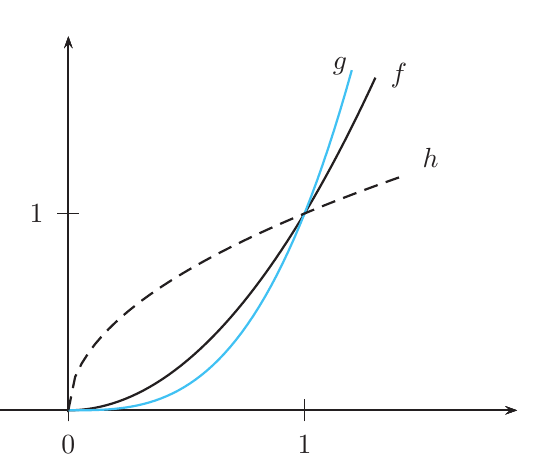
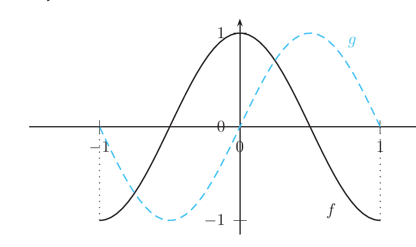

Cálculo de integrales
Derivar es mecánico; integrar es un oficio. Este tema reúne las herramientas para encontrar una primitiva: reconocer las inmediatas, cambiar de variable (la regla de la cadena al revés), integrar por partes (la regla del producto al revés), descomponer fracciones, y los trucos para trigonometría y raíces. Con la regla de Barrow del tema anterior, convierten cualquier integral definida «razonable» en una cuenta.
0Antes de empezar U p.246
Ya sabes que $\int_a^bf=F(b)-F(a)$ si $F$ es una primitiva (tema 6.2). Lo difícil es encontrar $F$. Es como abrir una cerradura: derivar te dice cómo es cada llave, e integrar es reconocer, a partir del integrando, qué regla de derivación lo produjo. Cada técnica es una regla de derivación leída al revés: la regla de la cadena da el cambio de variable, la regla del producto da las partes, y sumar fracciones da las fracciones simples. U lo llama «misión imposible» que se hace posible con técnicas (U p.246) y avisa de que hay que practicar mucho.
U p.246Qué necesitas saber ya
- Primitiva y regla de Barrow (tema 6.2): $F'=f$; $\int_a^bf=F(b)-F(a)$ si $f$ es continua en $[a,b]$.
- Integral y área (tema 6.1): área bajo la gráfica, área con signo, aditividad.
- Derivadas de las funciones elementales, producto y regla de la cadena (tema 2.2): todo este tema es leerlas al revés. En concreto $(\operatorname{arcsen}x)'=\frac1{\sqrt{1-x^2}}$, $(\operatorname{arctg}x)'=\frac1{1+x^2}$, $(\operatorname{tg}x)'=1+\operatorname{tg}^2x$.
- Polinomios: división, factorización y regla de Ruffini; resolver sistemas lineales pequeños. Trigonometría: $\operatorname{sen}^2+\cos^2=1$ y las fórmulas del ángulo doble.
Mapa del tema
| Apartado | Qué contiene | Dónde está |
|---|---|---|
| 1 Propiedades e inmediatas | linealidad, tabla de 11 integrales, «casi inmediatas»; Ej. 6.9-6.14 | U pp.247-249 |
| 2 Cambio de variable | indefinida y definida (cambio de límites); Ej. 6.15-6.17 | U pp.249-251 |
| 3 Integración por partes | fórmula, reiterada, cíclica, recurrencia, definida; Ej. 6.18-6.22 | U pp.251-254 |
| 4 Funciones racionales | dividir, fracciones simples, integrales de cada tipo; Ej. 6.23-6.24 | U pp.255-259 |
| 5 Método de Hermite | denominadores con raíces múltiples; Ej. 6.25 | U pp.259-261 |
| 6 Trigonométricas | $t=\operatorname{tg}\frac x2$, $\operatorname{sen}^n\cos^m$; Ej. 6.26-6.28 | U pp.261-263 |
| 7 Integrales con raíces | cambios que racionalizan ($x=t^r$, raíz de un cociente) | E pp.234-237; propio |
| 8 Cómo elegir la técnica | receta paso a paso | síntesis |
| 9 Ejercicios de E | 6.17-6.35 (19 ejercicios), agrupados por técnica | E pp.223-242 |
| 10 Ejemplos propios | 4 ejemplos, de menos a más difícil | propio |
| 11 Examen | 7 problemas de X | X |
| 12 Chuleta y comprobación | fórmulas, errores, lista | síntesis |
Qué se pide en los ejercicios y en el examen
(A) Hallar una primitiva con la técnica adecuada: inmediatas con constante ajustada, cambio de variable, partes, fracciones simples (con división previa), Hermite, trigonométricas y raíces (E 6.17-6.29; X pp.38, 137, 143, 148). (B) Reconocer qué método conviene en un test de opciones (E 6.18, 6.22, 6.23, 6.26). (C) Calcular una integral definida: la misma técnica más Barrow, cambiando los límites si se cambia la variable (E 6.30-6.32; X pp.19-20, 128, 141). (D) Áreas bajo una curva o entre curvas que se cruzan (E 6.33-6.35). La obligación que nunca falla: comprobar derivando el resultado.
1Propiedades y tabla de integrales inmediatas U pp.247-249
Si sabes que la derivada de $\operatorname{sen}x$ es $\cos x$, entonces una primitiva de $\cos x$ es $\operatorname{sen}x$. La «tabla de inmediatas» es exactamente la tabla de derivadas leída de derecha a izquierda, ya con la regla de la cadena incluida: una función compuesta multiplicada por la derivada de lo que hay dentro. Un integrando es «casi inmediato» si le falta solo una constante: se multiplica y se divide por ella.
U p.248Si $f$ y $g$ son continuas y $c$ es una constante: $$\int cf=c\int f,\qquad\int(f+g)=\int f+\int g.$$ Es decir, la integración es un proceso lineal: se integra término a término y las constantes salen fuera. No existe una regla análoga para el producto: $\int fg\ne\int f\int g$.
U p.247$\displaystyle\int(3x^2-2x+5)\,dx=3\!\int x^2dx-2\!\int x\,dx+5\!\int dx$. Como $x^3$, $x^2$ y $x$ son primitivas de $3x^2$, $2x$ y $1$ (se comprueba derivando), $$\int(3x^2-2x+5)\,dx=x^3-x^2+5x+k.$$
U p.247| Nº | Integral | Resultado | Se reconoce porque… |
|---|---|---|---|
| 1 | $\displaystyle\int a\,dx$ | $ax+k$ | constante |
| 2 | $\displaystyle\int f^a\,f'\,dx$ | $\dfrac{f^{a+1}}{a+1}+k$ si $a\ne-1$ | potencia de $f$ por $f'$ |
| 3 | $\displaystyle\int\frac{f'}{f}\,dx$ | $\ln\lvert f\rvert+k$ | numerador = derivada del denominador |
| 4 | $\displaystyle\int e^{f}f'\,dx$ | $e^{f}+k$ | exponencial por la derivada de su exponente |
| 5 | $\displaystyle\int a^{f}f'\,dx$ | $\dfrac{a^{f}}{\ln a}+k$ ($a\gt0$, $a\ne1$) | ídem con base $a$ |
| 6 | $\displaystyle\int\cos f\cdot f'\,dx$ | $\operatorname{sen}f+k$ | coseno por la derivada de su argumento |
| 7 | $\displaystyle\int\operatorname{sen}f\cdot f'\,dx$ | $-\cos f+k$ | seno por la derivada de su argumento |
| 8 | $\displaystyle\int\frac{f'}{\cos^2f}\,dx=\int(1+\operatorname{tg}^2f)f'\,dx$ | $\operatorname{tg}f+k$ | $\frac1{\cos^2}$ o $1+\operatorname{tg}^2$ |
| 9 | $\displaystyle\int\frac{f'}{1+f^2}\,dx$ | $\operatorname{arctg}f+k$ | «$1+(\cdot)^2$» abajo |
| 10 | $\displaystyle\int\frac{f'}{\sqrt{1-f^2}}\,dx$ | $\operatorname{arcsen}f+k$ | «$\sqrt{1-(\cdot)^2}$» abajo |
| 11 | $\displaystyle\int\frac{-f'}{\sqrt{1-f^2}}\,dx$ | $\arccos f+k$ | ídem con signo menos |
Las igualdades valen en los puntos donde las expresiones tienen sentido. La constante de integración se llama $k$ en U (aquí también $C$).
U p.248- 6.10 (potencia). $\int3\cos^2x\operatorname{sen}x\,dx$: con $f=\cos x$, $f'=-\operatorname{sen}x$, es $-3\int f^2f'=-\cos^3x+k$.
- 6.11 (coseno). $\int e^x\cos(e^x)\,dx$: el argumento es $e^x$ y su derivada $(e^x)'=e^x$ está multiplicando: $=\operatorname{sen}(e^x)+k$.
- 6.12 (arcoseno). $\displaystyle\int\frac{4x}{\sqrt{1-4x^4}}dx=\int\frac{4x}{\sqrt{1-(2x^2)^2}}dx$: con $f=2x^2$, $f'=4x$, es la fila 10: $=\operatorname{arcsen}2x^2+k$.
- 6.13. $\displaystyle\int\frac{7x}{x^2+3}dx=\frac72\int\frac{2x}{x^2+3}dx=\frac72\ln\lvert x^2+3\rvert+k$ ($7x=\frac72\cdot2x$, y $2x$ es la derivada del denominador). Aquí $x^2+3\gt0$, así que el valor absoluto sobra.
- 6.14. $\displaystyle\int\frac1x\,dx=\ln\lvert x\rvert+k$ (definido para $x\ne0$). U lo resume así: «cuando la integral es un logaritmo, escribimos el valor absoluto de su argumento».
Para pasar de «casi» a «inmediata»: (1) derivar la función de dentro, $f'$; (2) comparar con lo que hay; (3) si solo difiere en una constante $c$, multiplicar y dividir por ella. Ejemplo: $\int\cos(5x)\,dx$: $(5x)'=5$, luego $\int\cos(5x)\,dx=\frac15\int\cos(5x)\cdot5\,dx=\frac15\operatorname{sen}5x+k$. Solo se pueden ajustar constantes: si faltara una $x$, hay que usar otra técnica.
P(i) Olvidar el valor absoluto en el logaritmo (el argumento puede ser negativo). (ii) Olvidar la constante $k$ en la integral indefinida. (iii) Usar la fila 2 con $a=-1$ ($\int\frac{f'}{f}$ es la fila 3, un logaritmo, no una potencia). (iv) Olvidar dividir por la constante interior: $\int e^{2x}dx\ne e^{2x}$, es $\frac{e^{2x}}2$. (v) Creer que $\int fg=\int f\cdot\int g$.
P2Cambio de variable U pp.249-251
Cuando integras $\int\operatorname{sen}(3x)\,dx$, algo dentro de la función te estorba: el $3x$. Es como un problema escrito en unidades incómodas: se traduce a otras (llamo $t=3x$), se resuelve en ellas y se traduce de vuelta. Matemáticamente, el cambio de variable es la regla de la cadena leída al revés: si $F'=f$, entonces $(F(g(t)))'=f(g(t))\,g'(t)$. U da el consejo clave: observa el integrando: si se puede descomponer en dos partes y una es la derivada de la otra, ahí tenemos el cambio de variable (U p.250).
U p.249 L p.292 S pp.407-413Se introduce una variable $t$ con $x=g(t)$ (o $t=g^{-1}(x)$). Entonces $dx=g'(t)\,dt$ y $$\int f(x)\,dx=\int f(g(t))\,g'(t)\,dt.$$ Hay que cambiar también $dx$, y al final deshacer el cambio para que el resultado quede en función de $x$.
U p.250- Qué estorba: si abajo hubiera $t^2+1$ sería un arcotangente. Se llama $t=-3x+2$.
- $dx$ en función de $dt$: $dt=-3\,dx$, es decir $dx=-\frac{dt}3$.
- Sustituir e integrar: $I=\int\frac2{t^2+1}\left(-\frac{dt}3\right)=-\frac23\int\frac{dt}{t^2+1}=-\frac23\operatorname{arctg}t+k$.
- Deshacer el cambio: $I=-\frac23\operatorname{arctg}(-3x+2)+k$.
- Detectar «función y su derivada»: aparecen $1+\operatorname{sen}x$ y su derivada $\cos x$. Se toma $t=1+\operatorname{sen}x$, $dt=\cos x\,dx$.
- Sustituir: $\int\sqrt t\,dt=\frac23t^{3/2}+k$ (fila 2 con $a=\frac12$).
- Deshacer: $I=\frac23(1+\operatorname{sen}x)^{3/2}+k$.
U anima a resolver también los Ejemplos 6.10, 6.11 y 6.12 con un cambio de variable (U p.251).
U pp.250-251Cambio de variable en una integral definida
(a) Deshacer el cambio antes de sustituir los límites: se halla la primitiva en $x$ y se aplica Barrow con los límites originales. (b) Cambiar los límites: si $x=g(t)$ es continua con derivada continua y no nula en $[c,d]$, $f$ es continua en la imagen de $g$, y $g^{-1}(a)=c$, $g^{-1}(b)=d$, entonces $$\int_a^bf(x)\,dx=\int_c^df(g(t))\,g'(t)\,dt.$$ En (b) se integra en $t$ y se evalúa en los límites nuevos, sin volver a $x$. Para que el cambio sea válido, $g$ debe ser biyectiva en $[c,d]$ (por eso se exige derivada continua y no nula: $g^{\prime}$ no cambia de signo, luego $g$ es estrictamente monótona). Lo que no se puede es mezclar: integrar en $t$ y evaluar con los límites de $x$.
U p.251 L p.298- Qué estorba: la raíz dentro del seno. $t=\sqrt x$.
- $dx$: $dt=\frac1{2\sqrt x}dx$, luego $dx=2t\,dt$.
- Límites nuevos: $x=0\Rightarrow t=0$; $x=\pi^2\Rightarrow t=\pi$.
- Resultado: $I=\int_0^\pi2t\operatorname{sen}t\,dt$. U la deja indicada: se resuelve por partes en el Ejemplo 6.22 (apartado 3) y vale $2\pi$.
(i) Cambiar la variable en el integrando y olvidar $dx=g'(t)dt$. (ii) Dejar alguna $x$ en la integral en $t$. (iii) En una definida, cambiar de variable y conservar los límites de $x$. (iv) Elegir un cambio no biyectivo en el intervalo (por ejemplo, $g^{\prime}$ cambia de signo dentro: $t=x^2$ en $[-1,1]$ no sirve). (v) Olvidar deshacer el cambio en la indefinida.
P3Integración por partes U pp.251-254
Cuando el integrando es un producto de dos funciones de tipos distintos (un polinomio por una exponencial, un logaritmo por una potencia…), no hay una «derivada de lo de dentro». La regla del producto, $(uv)'=u'v+uv'$, dice cómo se reparte la derivada entre los dos factores. Leída al revés: «la integral de $uv'$ es $uv$ menos la integral de $u'v$». Es como una permuta: derivo un factor ($u\to u'$, que ojalá se simplifique) y integro el otro ($v'\to v$). Todo consiste en elegir bien quién hace cada papel, de modo que la integral que queda sea más fácil que la de partida.
U p.251 L p.515 S p.464De $(uv)'=u'v+uv'$ se obtiene $uv'=(uv)'-u'v$ y, integrando, $$\int u\,v'\,dx=u\,v-\int u'\,v\,dx.$$ U insiste (p.252): «es importante elegir $u$ y $v$ de forma que la nueva integral sea más sencilla que la original y de tal forma que sea fácil encontrar una primitiva de $v'$ y derivar $u$». En una integral definida, con el segundo teorema fundamental: $$\int_a^bu\,v'\,dx=\Big[u\,v\Big]_a^b-\int_a^bu'\,v\,dx.$$
U pp.252, 254Toma como $u$ la función que se simplifica al derivar, siguiendo este orden de prioridad: Logaritmo ($\ln x$) → Arco ($\operatorname{arctg}x$, $\operatorname{arcsen}x$) → Polinomio → Trigonométrica o Exponencial. El resto es $v'$. Si no sale, prueba el reparto contrario o otra técnica. Casos típicos: polinomio × $e^x$/$\operatorname{sen}$/$\cos$ → $u$ = polinomio; $\ln x$ o $\operatorname{arctg}x$ solos → $u$ = esa función, $v'=1$.
P- Elegir: $u=\ln x$, $v'=1$. Entonces $u'=\frac1x$, $v=x$.
- Fórmula: $\int\ln x\,dx=x\ln x-\int x\cdot\frac1x\,dx=x\ln x-\int dx$.
- Resultado: $x\ln x-x+k$. (Truco: se «inventa» el factor $v'=1$ para poder aplicar partes.)
- 1.ª pasada: $u=x^2$, $v'=e^x$ ⇒ $u'=2x$, $v=e^x$. $\int x^2e^x=x^2e^x-2\int xe^x\,dx$. El grado del polinomio ha bajado.
- 2.ª pasada en $\int xe^x$: $u=x$, $v'=e^x$ ⇒ $u'=1$, $v=e^x$. $\int xe^x=xe^x-\int e^x=xe^x-e^x$.
- Juntar (el $-2$ multiplica todo el corchete): $x^2e^x-2[xe^x-e^x]+k=x^2e^x-2xe^x+2e^x+k$.
Ni $e^x$ ni $\cos x$ se simplifican al derivar: la integral «vuelve a aparecer» y se despeja, como una ecuación.
- 1.ª pasada: $u=\cos x$, $v'=e^x$ ⇒ $u'=-\operatorname{sen}x$, $v=e^x$: $I=e^x\cos x+\int e^x\operatorname{sen}x\,dx$.
- 2.ª pasada en $\int e^x\operatorname{sen}x$: $u=\operatorname{sen}x$, $v'=e^x$ ⇒ $\int e^x\operatorname{sen}x=e^x\operatorname{sen}x-\int e^x\cos x\,dx=e^x\operatorname{sen}x-I$.
- Sustituir: $I=e^x\cos x+e^x\operatorname{sen}x-I$.
- Despejar $I$ (aparece a los dos lados): $2I=e^x\cos x+e^x\operatorname{sen}x$, es decir $I=\frac12(e^x\cos x+e^x\operatorname{sen}x)+k$.
Cuidado: en la 2.ª pasada $v'$ debe ser de nuevo la exponencial. Si se tomara $v'=\cos x$ (la $u$ anterior) se deshace el primer paso y se vuelve a la integral de partida (U p.253).
U p.253- Elegir: $u=\cos^{n-1}x$, $v'=\cos x$ ⇒ $u'=-(n-1)\cos^{n-2}x\operatorname{sen}x$, $v=\operatorname{sen}x$.
- Partes: $I=\operatorname{sen}x\cos^{n-1}x+(n-1)\int\cos^{n-2}x\operatorname{sen}^2x\,dx$.
- Usar $\operatorname{sen}^2=1-\cos^2$: $I=\operatorname{sen}x\cos^{n-1}x+(n-1)\int\cos^{n-2}x\,dx-(n-1)I$.
- Despejar $I$: $$\int\cos^nx\,dx=\frac{\operatorname{sen}x\cos^{n-1}x}n+\frac{n-1}n\int\cos^{n-2}x\,dx.$$
- Casos: $n=2$: $\int\cos^2x\,dx=\frac12\operatorname{sen}x\cos x+\frac12x+k$. $n=3$: $\int\cos^3x\,dx=\frac13\operatorname{sen}x\cos^2x+\frac23\operatorname{sen}x+k$.
Es la integral que quedó pendiente en el Ejemplo 6.17: $I=2\int_0^\pi t\operatorname{sen}t\,dt$.
- Elegir: $u=t$, $v'=\operatorname{sen}t$ ⇒ $u'=1$, $v=-\cos t$.
- Partes en la definida: $I=2\big[-t\cos t\big]_0^\pi+2\int_0^\pi\cos t\,dt$.
- Evaluar: $2(-\pi\cos\pi+0)+2[\operatorname{sen}t]_0^\pi=2\pi+0=2\pi$.
(i) Elegir $u$ y $v'$ al revés, de modo que la integral que sale es más difícil (por ejemplo $u=e^x$, $v'=x$ en $\int xe^x$: aparece $x^2$). (ii) Perder el signo menos de la fórmula al encadenar varias pasadas (se distribuye sobre todo lo que sigue). (iii) En una definida, olvidar evaluar el término $uv$ en los dos extremos. (iv) En la cíclica, deshacer el primer paso por tomar mal $v'$.
P4Integración de funciones racionales U pp.255-259
Sumar $\frac1x+\frac1{x+1}$ da $\frac{2x+1}{x(x+1)}$: un denominador común y un numerador feo. Integrar ese cociente directamente es difícil, pero integrar cada sumando es inmediato (dos logaritmos). La técnica consiste en deshacer la suma: dado $\frac{p}{q}$, encontrar las fracciones «simples» de las que sale. Como al sumar fracciones, el denominador común es el producto de los factores de $q$, y el punto de partida es factorizar $q$.
U p.255 S pp.484-493 L pp.542-550- Comparar grados. La técnica es para $\frac{p(x)}{q(x)}$ con $\operatorname{grado}p\lt\operatorname{grado}q$. Si no, se divide: $\frac pq=P+\frac rq$ con $P$ polinomio y $\operatorname{grado}r\lt\operatorname{grado}q$ (el polinomio $P$ se integra directamente).
- Factorizar $q$ en reales y cuadráticos irreducibles: $q(x)=(x-a_1)^{n_1}\cdots(x-a_r)^{n_r}\,(x^2+b_1x+c_1)^{m_1}\cdots$ Las raíces enteras se hallan con Ruffini; las demás con las fórmulas de Álgebra o un programa de cálculo simbólico.
- Plantear una fracción por cada factor:
- raíz real $a$ de multiplicidad $n$: $\dfrac{A_1}{x-a}+\dfrac{A_2}{(x-a)^2}+\cdots+\dfrac{A_n}{(x-a)^n}$ (si $n=1$, solo la primera);
- factor irreducible $x^2+bx+c$ (raíces imaginarias) de multiplicidad $m$: $\dfrac{B_1x+C_1}{x^2+bx+c}+\cdots+\dfrac{B_mx+C_m}{(x^2+bx+c)^m}$.
- Hallar los coeficientes: quitar denominadores (multiplicar por $q$) y (a) dar a $x$ las raíces reales de $q$, que anulan casi todos los sumandos, y (b) completar con otros valores sencillos de $x$ o igualando coeficientes de las potencias de $x$ hasta tener tantas ecuaciones como incógnitas.
- Integrar cada fracción (cuadro siguiente).
- $\displaystyle\int\frac{A}{x-a}\,dx=A\ln\lvert x-a\rvert+k$ (logaritmo).
- $\displaystyle\int\frac{A}{(x-a)^n}\,dx=\frac{A}{-n+1}(x-a)^{-n+1}+k$ si $n\ge2$ (potencia).
- $\displaystyle\int\frac{Bx+C}{x^2+bx+c}\,dx$ con $x^2+bx+c$ irreducible: un logaritmo más un arcotangente. Se escribe el numerador como (constante)$\cdot(2x+b)$ + (constante): el primer trozo es $\frac{f'}f$ (logaritmo) y en el segundo se completan cuadrados, $x^2+bx+c=(x+\frac b2)^2+r^2$, para llegar a la fila 9 de la tabla.
Para potencias del irreducible, $(x^2+bx+c)^m$ con $m\ge2$, U recomienda el método de Hermite (apartado 5).
U pp.257-258- Grados: numerador 3 < denominador 5: no se divide.
- Factores: $x=-2$ (simple), $x=1$ (doble), y $x^2+4$ irreducible (no tiene raíces reales). Planteamiento: $$\frac{2x^3+13x-30}{(x+2)(x-1)^2(x^2+4)}=\frac{A}{x+2}+\frac{B}{x-1}+\frac{C}{(x-1)^2}+\frac{Dx+E}{x^2+4}.$$
- Quitar denominadores: $2x^3+13x-30=A(x-1)^2(x^2+4)+B(x+2)(x-1)(x^2+4)+C(x+2)(x^2+4)+(Dx+E)(x+2)(x-1)^2$.
- $x=1$ (se anulan todos los sumandos salvo el de $C$): $-15=15C\Rightarrow C=-1$. $x=-2$: $-72=72A\Rightarrow A=-1$.
- Quedan tres incógnitas ($B$, $D$, $E$): se dan tres valores sencillos, $x=0,-1,2$. Sale el sistema $8B-2E=18$, $10B+4D-4E=20$, $32B+8D+4E=52$, con solución $B=2$, $D=-1$, $E=-1$.
- Resultado: $$\frac{2x^3+13x-30}{(x+2)(x-1)^2(x^2+4)}=-\frac1{x+2}+\frac2{x-1}-\frac1{(x-1)^2}+\frac{-x-1}{x^2+4}.$$
$I=\int\frac{2x^3+13x-30}{x^5+x^3+2x^2-12x+8}\,dx$. El denominador es el producto $(x+2)(x-1)^2(x^2+4)$ del ejemplo anterior, así que $$I=\int\frac{-1}{x+2}dx+\int\frac{2}{x-1}dx+\int\frac{-1}{(x-1)^2}dx+\int\frac{-(x+1)}{x^2+4}dx.$$
- $\int\frac{-1}{x+2}=-\ln\lvert x+2\rvert$ y $\int\frac2{x-1}=2\ln\lvert x-1\rvert$ (logaritmos).
- $\int\frac{-1}{(x-1)^2}=\frac1{x-1}$ (potencia).
- Factor irreducible. El numerador es «casi» la derivada $2x$ del denominador: $\int\frac{-(x+1)}{x^2+4}=-\frac12\int\frac{2x}{x^2+4}-\int\frac{dx}{x^2+4}=-\frac12\ln(x^2+4)-\frac14\int\frac{dx}{(x/2)^2+1}$. Con $f=\frac x2$ ($f'=\frac12$) falta un factor $2$: $\int\frac{dx}{(x/2)^2+1}=2\operatorname{arctg}\frac x2$. Queda $-\frac14\cdot2\operatorname{arctg}\frac x2=-\frac12\operatorname{arctg}\frac x2$.
- Sumar sin olvidar la constante: $$I=-\ln\lvert x+2\rvert+2\ln\lvert x-1\rvert+\frac1{x-1}-\frac12\ln(x^2+4)-\frac12\operatorname{arctg}\frac x2+k.$$
(i) Descomponer sin dividir antes (los coeficientes «salen» pero la igualdad es falsa). (ii) Poner una sola fracción por cada factor repetido (falta una por cada potencia hasta la $n$). (iii) Poner solo una constante sobre un factor irreducible (es $Bx+C$). (iv) Olvidar los valores absolutos y los coeficientes al integrar. (v) No comprobar que el cuadrático es realmente irreducible (discriminante negativo).
P5Método de Hermite U pp.258-261
Al derivar un cociente $\frac{f}{g}$ aparece $g^2$ abajo: por eso un factor repetido en el denominador de $\frac pq$ «huele» a derivada de un cociente. El método de Hermite lo aprovecha: se separa $\frac pq$ en una parte que es la derivada de un cociente $\frac fg$ (que se integra sola, devolviendo $\frac fg$) y una parte con todos los factores simples, que se integra con logaritmos y arcotangentes. Se evita así resolver varios sistemas y las integrales de potencias del irreducible, que son molestas. Sirve en general, y es especialmente útil cuando el denominador tiene raíces múltiples, reales o complejas (U p.259). U lo recomienda en cuanto el denominador contiene una potencia de un irreducible de grado 2: «es mejor aplicar el método de Hermite» (U p.258).
U p.258Para $\frac{p(x)}{q(x)}$ con $\operatorname{grado}p\lt\operatorname{grado}q$: $$\frac{p(x)}{q(x)}=\frac{d}{dx}\!\left(\frac{f(x)}{g(x)}\right)+\frac{p_1(x)}{q_1(x)},$$ donde:
- $g$ tiene las mismas raíces que $q$ (reales o complejas) con la multiplicidad rebajada en una unidad (se obtiene como m.c.d. de $q$ y $q'$);
- $f$ es un polinomio de grado una unidad menos que $g$ (con coeficientes incógnita);
- $q_1$ tiene las mismas raíces que $q$, pero todas con multiplicidad uno; $\frac{p_1}{q_1}$ se descompone en fracciones simples: $\frac{A_i}{x-x_i}$ y $\frac{M_jx+N_j}{x^2+m_jx+n_j}$.
Se derivan, se quitan denominadores, se igualan coeficientes y se resuelve el sistema. Entonces $$\int\frac pq\,dx=\frac fg+\int\frac{p_1}{q_1}\,dx,$$ y las integrales que quedan son las de fracciones simples del apartado anterior.
U p.259- Raíces del denominador: $-1$ (simple) y $\pm i$ (dobles). Entonces $g=x^2+1$ (la raíz doble pasa a simple y la raíz simple $-1$ desaparece), $f=cx+d$ y $q_1=(x+1)(x^2+1)$: $$\frac1{(x+1)(x^2+1)^2}=\frac{d}{dx}\!\left(\frac{cx+d}{x^2+1}\right)+\frac A{x+1}+\frac{Mx+N}{x^2+1}.$$
- Derivar el cociente: $\frac{d}{dx}\frac{cx+d}{x^2+1}=\frac{-cx^2+c-2dx}{(x^2+1)^2}$.
- Quitar denominadores (multiplicar por $(x+1)(x^2+1)^2$) e igualar coeficientes de $x^4,\dots,x^0$: $$\begin{cases}M+A=0\\ M+N-c=0\\ 2A+M+N-c-2d=0\\ M+N+c-2d=0\\ A+N+c=1\end{cases}\Longrightarrow c=d=A=\tfrac14,\quad N=\tfrac12,\quad M=-\tfrac14.$$
- Integrar: la parte «derivada» da $\frac14\frac{x+1}{x^2+1}$; $\frac14\int\frac{dx}{x+1}=\frac14\ln\lvert x+1\rvert$; y $\frac14\int\frac{-x+2}{x^2+1}dx=-\frac18\ln(x^2+1)+\frac12\operatorname{arctg}x$.
- Resultado: $$\int\frac{dx}{(x+1)(x^2+1)^2}=\frac14\frac{x+1}{x^2+1}+\frac14\ln\lvert x+1\rvert-\frac18\ln(x^2+1)+\frac12\operatorname{arctg}x+k.$$
«Encontrar la descomposición ha sido engorroso, pero una vez que se tiene, el cálculo de la integral es relativamente sencillo» (U p.261). El sistema debe saberse resolver a mano, aunque se pueda comprobar con un programa.
U pp.260-261(i) Olvidar que $x^2+1$ tiene raíces (complejas) y está repetida: es el caso de Hermite. (ii) Dar a $f$ un grado equivocado: debe ser uno menos que $g$ y con todos sus coeficientes (incluida la constante). (iii) Equivocarse al derivar el cociente; conviene recordar $\frac{d}{dx}\frac{cx+d}{x^2+1}=\frac{-cx^2-2dx+c}{(x^2+1)^2}$. (iv) Olvidar sumar $\frac fg$ al resultado.
P6Integrales trigonométricas U pp.261-263
Hay tres situaciones. (1) Una expresión racional en $\operatorname{sen}x$ y $\cos x$ cualquiera: hay un cambio «universal» que la vuelve una fracción de polinomios, $t=\operatorname{tg}\frac x2$. Siempre funciona, pero deja cuentas largas: es la última carta. (2) Un producto $\operatorname{sen}^nx\cos^mx$: si alguno de los exponentes es impar, se «roba» un factor que hace de derivada del otro; si ambos son pares, se baja el grado con las fórmulas del ángulo doble. (3) Si solo aparece la tangente de un argumento: $t=\operatorname{tg}(\text{argumento})$ (E 6.27).
U pp.261-263 L pp.524-532 S pp.471-477$$t=\operatorname{tg}\frac x2\ \Longrightarrow\ x=2\operatorname{arctg}t,\quad dx=\frac{2\,dt}{1+t^2},\qquad\operatorname{sen}x=\frac{2t}{1+t^2},\quad\cos x=\frac{1-t^2}{1+t^2}.$$ Convierte muchas integrales trigonométricas en integrales racionales en $t$.
De dónde salen (explicación propia): como $\cos^2\frac x2=\frac1{1+\operatorname{tg}^2(x/2)}=\frac1{1+t^2}$, se tiene $\operatorname{sen}x=2\operatorname{sen}\frac x2\cos\frac x2=2t\cos^2\frac x2=\frac{2t}{1+t^2}$ y $\cos x=\cos^2\frac x2-\operatorname{sen}^2\frac x2=\cos^2\frac x2(1-t^2)=\frac{1-t^2}{1+t^2}$.
U p.261 P- Sustituir con $t=\operatorname{tg}\frac x2$: $1+\cos x=\frac{2}{1+t^2}$ y $1+\operatorname{sen}^2x=1+\frac{4t^2}{(1+t^2)^2}$.
- Simplificar con $dx=\frac{2dt}{1+t^2}$: los factores $\frac{1+t^2}{2}\cdot\frac{2}{1+t^2}$ se cancelan y queda $I=\int\Big(1+\frac{4t^2}{(1+t^2)^2}\Big)dt=t+4\int\frac{t^2}{(1+t^2)^2}dt$.
- Hermite en la segunda: $\frac{t^2}{(1+t^2)^2}=\frac{d}{dt}\Big(\frac{At+B}{1+t^2}\Big)+\frac{Mt+N}{1+t^2}$. Al derivar, quitar denominadores e igualar coeficientes sale $A=-\frac12$, $B=M=0$, $N=\frac12$: $\frac{t^2}{(1+t^2)^2}=-\frac12\,\frac{d}{dt}\frac{t}{1+t^2}+\frac12\cdot\frac1{1+t^2}$.
- Integrar: $I=t-\frac{2t}{1+t^2}+2\operatorname{arctg}t+k$.
- Deshacer el cambio ($\frac{2t}{1+t^2}=\operatorname{sen}x$, $2\operatorname{arctg}t=x$): $I=\operatorname{tg}\frac x2-\operatorname{sen}x+x+k$.
- $n$ y $m$ pares: se baja el grado con $\operatorname{sen}^2x=\dfrac{1-\cos2x}2$ y $\cos^2x=\dfrac{1+\cos2x}2$ (repitiendo si hace falta).
- $n=2k+1$ impar: $\operatorname{sen}^{2k+1}x\cos^mx=(1-\cos^2x)^k\cos^mx\,\operatorname{sen}x$: una suma de potencias del coseno por su derivada cambiada de signo, fácil de integrar (cambio $t=\cos x$). Igual si $m=2k+1$ es impar (cambio $t=\operatorname{sen}x$).
- Ángulo doble: $\cos^2x\operatorname{sen}^2x=\frac{1+\cos2x}{2}\cdot\frac{1-\cos2x}2=\frac14(1-\cos^22x)$.
- Otra vez con $\cos^22x=\frac{1+\cos4x}2$: $=\frac14-\frac14\cdot\frac{1+\cos4x}2=\frac18-\frac18\cos4x$.
- Integrar: $I=\frac x8-\frac1{8}\cdot\frac{\operatorname{sen}4x}4+k=\frac x8-\frac{\operatorname{sen}4x}{32}+k$.
- Separar un seno: $\operatorname{sen}^3x\cos^2x=(1-\cos^2x)\cos^2x\operatorname{sen}x=\cos^2x\operatorname{sen}x-\cos^4x\operatorname{sen}x$.
- Cada trozo es potencia de $\cos x$ por $\operatorname{sen}x=-(\cos x)'$: fila 2 con signo menos.
- Resultado: $I=-\frac13\cos^3x+\frac15\cos^5x+k$.
(i) Escribir $\cos^2(2x)=\frac{1+\cos2x}2$: el ángulo se duplica, es $\frac{1+\cos4x}2$. (ii) Perder el signo menos de $d(\cos x)=-\operatorname{sen}x\,dx$. (iii) Usar el ángulo doble cuando hay un exponente impar (se puede, pero es más largo). (iv) Usar $t=\operatorname{tg}\frac x2$ cuando una técnica más simple sirve. (v) Escribir $\int\operatorname{sen}^2x=\frac{\operatorname{sen}^3x}3$: no hay $\cos x$ que haga de derivada.
P7Integrales con raíces: cambios que racionalizan E pp.234-237
Una raíz estorba porque no es un polinomio. El remedio es un cambio de variable que la convierta en algo entero: si $x=t^2$, entonces $\sqrt x=t$. Si hay varias raíces de $x$ (cuadrada y cúbica, por ejemplo), se toma el exponente que las absorbe todas: el mínimo común múltiplo de los índices. Después queda una integral racional (con división previa si hace falta), que ya sabes resolver.
E pp.234-237- Potencias $x^{a/b},x^{c/d},\dots$ de $x$: $x=t^r$ con $r=\operatorname{m.c.m.}(b,d,\dots)$, $dx=r\,t^{r-1}dt$ (E 6.28; X p.143).
- Raíz de un cociente lineal $\sqrt{\frac{ax+b}{cx+d}}$: igualar la raíz (o su cuadrado) a $t$ y despejar $x$ en función de $t$ para hallar $dx=g'(t)\,dt$ (E 6.29).
- Una expresión $\sqrt{ax+b}$ o $g(x)$ dentro de una raíz: $t=\sqrt{ax+b}$ (o $t=g(x)$) y se expresa el resto de $x$ en función de $t$ (X p.38; Propio 3).
- Exponenciales $e^{kx}$ en varios sitios: $t=e^{kx}$, $dx=\frac{dt}{kt}$.
- Cambio: $x=t^2$ ($t=\sqrt x\ge0$), $dx=2t\,dt$: $I=\int\frac{2t}{1+t}\,dt$.
- Dividir (grados iguales): $\frac{2t}{1+t}=2-\frac2{1+t}$.
- Integrar: $2t-2\ln(1+t)$ ($1+t\gt0$).
- Deshacer: $I=2\sqrt x-2\ln(1+\sqrt x)+C$. Comprobación: derivando, $\frac1{\sqrt x}-\frac{1}{\sqrt x(1+\sqrt x)}=\frac{1}{1+\sqrt x}$.
8Cómo elegir la técnica P
No se prueba al azar: se mira la forma del integrando. De más sencillo a más costoso: ¿es inmediata? ¿hay una función y su derivada (cambio)? ¿es un producto de tipos distintos (partes)? ¿es un cociente de polinomios (racional)? ¿hay senos y cosenos (trigonométrica)? ¿hay raíces (cambio racionalizador)? Y siempre se acaba comprobando derivando.
P S p.494- Preparar. Simplificar el integrando y separar sumas (linealidad). Mirar el dominio.
- ¿Inmediata o casi? Buscar en la tabla (U p.248) la forma «función × su derivada». Si solo falta una constante, multiplicar y dividir por ella.
- ¿Cambio de variable? Si el integrando se parte en «una función» y «su derivada» (salvo constante), $t$ = esa función. También si hay algo molesto dentro de otra función ($\operatorname{sen}\sqrt x$, $e^{2x}$, $\sqrt[3]{1+x^3}$): $t$ = lo molesto.
- ¿Producto de dos tipos distintos? (polinomio·$e^x$, polinomio·$\operatorname{sen}$/$\cos$, polinomio·$\ln x$, $\ln x$ o $\operatorname{arc}\dots$ solos, $e^x\cos x$): partes, con $u$ = la que se simplifica al derivar. Si la integral reaparece, se despeja.
- ¿Cociente de polinomios? (a) Si grado num ≥ grado den, dividir. (b) Mirar si el numerador es (casi) la derivada del denominador: entonces es un $\ln$. (c) Factorizar el denominador y descomponer en fracciones simples; si hay factores $x^2+bx+c$ repetidos, Hermite. (d) Integrar cada fracción: $\ln$, potencia o $\ln$+$\operatorname{arctg}$.
- ¿Trigonométrica? (a) $\operatorname{sen}^n\cos^m$ con algún exponente impar: separar un factor, pasar el resto con $\operatorname{sen}^2+\cos^2=1$ y cambio $t=\cos x$ (o $t=\operatorname{sen}x$). (b) Exponentes pares: ángulo doble. (c) Solo $\operatorname{tg}(\cdot)$: $t=\operatorname{tg}(\cdot)$. (d) Racional cualquiera en $\operatorname{sen}$, $\cos$: $t=\operatorname{tg}\frac x2$ (siempre funciona, pero deja cuentas largas: al final).
- ¿Raíces de $x$? $x=t^r$ con $r$ = m.c.m. de los índices; $\sqrt{\frac{ax+b}{cx+d}}=t$.
- Si es definida: comprobar que el integrando es continuo en $[a,b]$; si se cambia de variable, cambiar también los límites (o deshacer el cambio); aplicar Barrow. Si se pide un área, estudiar el signo y partir el intervalo en los cortes.
- Comprobar SIEMPRE derivando la primitiva y escribir $+C$.
9Ejercicios del libro, resueltos E pp.223-242
Los ejercicios 6.17-6.35 de E corresponden a esta sección (el 6.36 ya es de §6.4). Se resuelven agrupados por técnica y de fácil a difícil, conservando su numeración: A inmediatas y cambio sencillo (6.17, 6.30, 6.31) → B partes (6.18, 6.19) → C racionales (6.20-6.25) → D cambios que racionalizan (6.28, 6.29, 6.27) → E trigonométricas (6.32, 6.26) → F áreas (6.33-6.35).
Índice rápido: 6.17 · 6.30 · 6.31 · 6.18 · 6.19 · 6.20 · 6.21 · 6.22 · 6.23 · 6.24 · 6.25 · 6.28 · 6.29 · 6.27 · 6.32 · 6.26 · 6.33 · 6.34 · 6.35.
Cada solución sigue la receta general del apartado 8. En las definidas se comprueba primero la continuidad, se halla una primitiva (comprobada derivando) y se aplica Barrow. En los test de opciones, lo primero es descartar con una propiedad rápida (signo, grado, dominio) y solo después calcular.
PA. Inmediatas y cambio de variable sencillo
Ejercicio 6.17 · tres primitivas «función por su derivada» E pp.223-224
Calcula las integrales indefinidas: 1. $\displaystyle\int\frac{\ln x}{x}\,dx$. 2. $\displaystyle\int\frac{x^2-1}{x^3-3x+7}\,dx$. 3. $\displaystyle\int\frac{\operatorname{sen}\sqrt{x^3}}{\sqrt{x^3}}\cdot x^2\,dx$.
- Qué me piden
- Tres primitivas (familias $F(x)+C$).
- Cómo lo pienso
- En las tres hay una función y, muy cerca, su derivada: $\ln x$ y $\frac1x$; $x^3-3x+7$ y $3x^2-3$; $x^{3/2}$ y $\frac32x^{1/2}$. Son inmediatas, ajustando constantes.
- Qué uso
- Tabla de inmediatas (U p.248): filas 2 ($\int f^af'$), 3 ($\int\frac{f'}f$) y 7 ($\int\operatorname{sen}f\cdot f'$).
- Por dónde empiezo
- En cada una, derivar la «función de dentro» y comparar con lo que sobra.
1.
- Dominio: $\ln x$ exige $x\gt0$.
- Detectar $f$ y $f'$: con $f=\ln x$, $f'=\frac1x$, el integrando es $f\cdot f'=f^1f'$.
- Fila 2 con $a=1$: $\displaystyle\int\frac{\ln x}{x}dx=\frac{(\ln x)^2}2+C$.
- Comprobación: $\frac{d}{dx}\frac{(\ln x)^2}2=\ln x\cdot\frac1x$ ✓.
2.
- Mirar si el numerador es la derivada del denominador: $(x^3-3x+7)'=3x^2-3=3(x^2-1)$. El numerador es $\frac13$ de la derivada.
- Ajustar la constante: $\displaystyle\int\frac{x^2-1}{x^3-3x+7}dx=\frac13\int\frac{3(x^2-1)}{x^3-3x+7}dx$.
- Fila 3: $=\frac13\ln\lvert x^3-3x+7\rvert+C$. Con valor absoluto: el denominador puede ser negativo (en $x=-3$ vale $-11$).
3.
- Exponentes: $\frac{x^2}{\sqrt{x^3}}=x^{2-3/2}=x^{1/2}$, así que el integrando es $\operatorname{sen}(x^{3/2})\,x^{1/2}$ ($x\gt0$).
- Derivada de lo de dentro: $(x^{3/2})'=\frac32x^{1/2}$. Sobra $x^{1/2}=\frac23\cdot\frac32x^{1/2}$.
- Fila 7: $\displaystyle\int\operatorname{sen}(x^{3/2})x^{1/2}dx=\frac23\int\operatorname{sen}(x^{3/2})\tfrac32x^{1/2}dx=-\frac23\cos\sqrt{x^3}+C$. Aunque sea un producto, no hace falta partes.
En 2., lanzarse a fracciones simples o escribir $\ln(x^3-3x+7)$ sin valor absoluto. En 3., olvidar el factor $\frac23$.
Ejercicio 6.30 · $\int_0^1\frac{\operatorname{arcsen}(x/2)}{\sqrt{4-x^2}}dx$ E p.237
Señala el valor de $\displaystyle\int_0^1\frac{\operatorname{arcsen}\frac x2}{\sqrt{4-x^2}}\,dx$: a) $-\frac{\pi^2}9$. b) $\frac{\pi^2}{72}$. c) $-\frac{\pi}{\sqrt3}$. d) $\frac{\pi}{\sqrt3}$.
- Qué me piden
- El valor de una integral definida.
- Cómo lo pienso
- El integrando es positivo en $[0,1]$ (descarto a) y c)). Además $\frac1{\sqrt{4-x^2}}$ «huele» a la derivada de $\operatorname{arcsen}\frac x2$: el integrando sería $f\cdot f'$.
- Qué uso
- Derivada de $\operatorname{arcsen}$ y regla de la cadena (U §2.2, pp.79-80); tabla, fila 2 (U p.248); Barrow (U Teor. 6.2, p.244).
- Por dónde empiezo
- Derivar $\operatorname{arcsen}\frac x2$.
- Continuidad. En $[0,1]$: $4-x^2\ge3\gt0$ y $\frac x2\in[0,\frac12]$: el integrando es continuo y se puede usar Barrow.
- Derivar $f(x)=\operatorname{arcsen}\frac x2$: $f'(x)=\dfrac1{\sqrt{1-\frac{x^2}4}}\cdot\dfrac12=\dfrac{2}{\sqrt{4-x^2}}\cdot\dfrac12=\dfrac1{\sqrt{4-x^2}}$.
- El integrando es $f\cdot f'$, de primitiva $\frac{f^2}2$ (fila 2, $a=1$): $F(x)=\frac12\operatorname{arcsen}^2\frac x2$.
- Barrow: $\dfrac12\Big(\operatorname{arcsen}^2\tfrac12-\operatorname{arcsen}^20\Big)=\dfrac12\Big(\dfrac\pi6\Big)^2=\dfrac{\pi^2}{72}$.
- Respuesta: b). Sentido común: $\frac{\pi^2}{72}\approx0{,}137\gt0$.
Olvidar el factor $\frac12$ de la regla de la cadena en la derivada de $\operatorname{arcsen}\frac x2$.
Ejercicio 6.31 · $\int_{1/2}^{5/4}\frac{dx}{\sqrt{3-(2x-1)^2}}$ E p.238
Señala el valor de $\displaystyle\int_{1/2}^{5/4}\frac{dx}{\sqrt{3-(2x-1)^2}}$: a) $0$. b) $\frac\pi4$. c) $\frac\pi{\sqrt3}$. d) $\frac\pi6$.
- Qué me piden
- El valor de una integral definida.
- Cómo lo pienso
- «$\frac1{\sqrt{\text{número}-(\dots)^2}}$» es de tipo arcoseno. Molesta el $2x-1$: lo llamo $t$ y cambio también los límites. Luego saco el $3$ de la raíz para tener $\sqrt{1-(\cdot)^2}$.
- Qué uso
- Cambio de variable en la definida (U p.251); tabla, fila 10 (U p.248).
- Por dónde empiezo
- $t=2x-1$.
- Continuidad. En $[\frac12,\frac54]$, $2x-1\in[0,\frac32]$ y $(2x-1)^2\le\frac94\lt3$: la raíz es positiva.
- Cambio $t=2x-1$: $dx=\frac{dt}2$. Límites nuevos: $x=\frac12\Rightarrow t=0$; $x=\frac54\Rightarrow t=\frac32$. Queda $I=\frac12\int_0^{3/2}\frac{dt}{\sqrt{3-t^2}}$.
- Preparar el arcoseno: $\sqrt{3-t^2}=\sqrt3\sqrt{1-\big(\frac t{\sqrt3}\big)^2}$, así que $\frac1{\sqrt{3-t^2}}=\dfrac{\frac1{\sqrt3}}{\sqrt{1-(t/\sqrt3)^2}}$: con $f=\frac t{\sqrt3}$, $f'=\frac1{\sqrt3}$, es $\frac{f'}{\sqrt{1-f^2}}$.
- Primitiva y Barrow con los límites nuevos: $I=\frac12\Big(\operatorname{arcsen}\frac{3/2}{\sqrt3}-\operatorname{arcsen}0\Big)=\frac12\operatorname{arcsen}\frac{\sqrt3}2=\frac12\cdot\frac\pi3=\frac\pi6$.
- Respuesta: d).
Cambiar la variable pero dejar los límites $\frac12$ y $\frac54$, u olvidar el $\frac12$ de $dx=\frac{dt}2$.
B. Integración por partes
Ejercicio 6.18 · ¿qué $u$ y $v'$ conviene en $\int xe^x\,dx$? E pp.224-225
Queremos resolver $I=\int xe^x\,dx$ por partes: a) Interesa $u=x$ y $v'=e^x$. b) Interesa $u=e^x$ y $v'=x$. c) Las dos son válidas. d) Ninguna de las anteriores.
- Qué me piden
- Decidir qué elección de $u$ y $v'$ conviene.
- Cómo lo pienso
- La fórmula cambia $\int uv'$ por $\int u'v$. Conviene que $u'$ sea más simple que $u$ y que $v$ no se complique: $x$ al derivar se convierte en $1$; $e^x$ no cambia ni al derivar ni al integrar.
- Qué uso
- Integración por partes (U p.252), con el criterio «la nueva integral debe ser más sencilla».
- Por dónde empiezo
- Probar la opción a).
- Opción a): $u=x\Rightarrow u'=1$; $v'=e^x\Rightarrow v=e^x$.
- Fórmula $\int uv'=uv-\int u'v$: $I=xe^x-\int e^x\,dx=xe^x-e^x+C=(x-1)e^x+C$. La nueva integral es inmediata: a) funciona.
- Opción b): $u=e^x\Rightarrow u'=e^x$; $v'=x\Rightarrow v=\frac{x^2}2$: $I=\frac{x^2}2e^x-\int\frac{x^2}2e^x\,dx$. Ahora aparece $x^2$ en vez de $x$: es más difícil. b) no interesa y, por tanto, c) tampoco.
- Respuesta: a). Comprobación: $\frac{d}{dx}(x-1)e^x=e^x+(x-1)e^x=xe^x$ ✓.
Elegir $u$ al revés: la integral crece de grado en vez de simplificarse.
Ejercicio 6.19 · $\int\frac{xe^x}{(x+1)^2}dx$ por partes E p.225
Utilizando integración por partes, calcula $\displaystyle I=\int\frac{xe^x}{(x+1)^2}\,dx$.
- Qué me piden
- Una primitiva, por partes.
- Cómo lo pienso
- $\frac1{(x+1)^2}$ se integra fácil ($-\frac1{x+1}$), así que es buen $v'$. Y al derivar $u=xe^x$ sale $e^x(x+1)$, con un $(x+1)$ que se simplificará con el $\frac1{x+1}$ de $v$.
- Qué uso
- Integración por partes (U p.252); tabla, fila 2 con $a=-2$ (U p.248).
- Por dónde empiezo
- $u=xe^x$, $v'=\frac1{(x+1)^2}$.
- Dominio: $x\ne-1$.
- Elección: $u=xe^x\Rightarrow u'=e^x+xe^x=e^x(x+1)$. $v'=(x+1)^{-2}\Rightarrow v=-\frac1{x+1}$.
- Fórmula: $I=xe^x\Big(-\dfrac1{x+1}\Big)-\displaystyle\int e^x(x+1)\Big(-\dfrac1{x+1}\Big)dx=-\dfrac{xe^x}{x+1}+\int e^x\,dx$.
- Integral inmediata: $I=-\frac{xe^x}{x+1}+e^x+C$.
- Simplificar (denominador común): $-\frac{xe^x}{x+1}+\frac{(x+1)e^x}{x+1}=\frac{e^x}{x+1}$. Así $I=\dfrac{e^x}{x+1}+C$.
- Comprobación: $\Big(\frac{e^x}{x+1}\Big)'=\frac{e^x(x+1)-e^x}{(x+1)^2}=\frac{xe^x}{(x+1)^2}$ ✓.
Tomar $u=x$, $v'=\frac{e^x}{(x+1)^2}$: esa $v'$ no tiene primitiva elemental sencilla y el método se atasca.
C. Integrales racionales
Ejercicio 6.20 · descomponer $\frac{x^2+7x+3}{(x+1)^3}$ en fracciones simples E pp.225-226
Descompón la expresión racional $f(x)=\dfrac{x^2+7x+3}{(x+1)^3}$ en fracciones simples.
- Qué me piden
- Escribir $f$ como suma de fracciones del tipo $\frac{A}{(x+1)^k}$.
- Cómo lo pienso
- El denominador tiene una sola raíz, $x=-1$, triple; el grado del numerador (2) es menor que el del denominador (3): no hay que dividir. Por cada potencia de $(x+1)$ hasta la 3.ª va una fracción.
- Qué uso
- Descomposición en fracciones simples (U p.255); igualdad de polinomios por coeficientes.
- Por dónde empiezo
- Plantear $\frac a{x+1}+\frac b{(x+1)^2}+\frac c{(x+1)^3}$.
- Comprobaciones previas: grado $2\lt3$ (no se divide); el numerador no se anula en $-1$ ($1-7+3=-3\ne0$): no se simplifica nada.
- Planteamiento (raíz real de multiplicidad 3 ⇒ tres fracciones): $\dfrac{x^2+7x+3}{(x+1)^3}=\dfrac a{x+1}+\dfrac b{(x+1)^2}+\dfrac c{(x+1)^3}$.
- Quitar denominadores (multiplicar por $(x+1)^3$): $x^2+7x+3=a(x+1)^2+b(x+1)+c=ax^2+(2a+b)x+(a+b+c)$.
- Igualar coeficientes: $a=1$; $2a+b=7\Rightarrow b=5$; $a+b+c=3\Rightarrow c=-3$.
- Resultado: $f(x)=\dfrac1{x+1}+\dfrac5{(x+1)^2}-\dfrac3{(x+1)^3}$.
- Atajo: con $u=x+1$ ($x=u-1$) el numerador es $u^2+5u-3$ y $\frac{u^2+5u-3}{u^3}=\frac1u+\frac5{u^2}-\frac3{u^3}$. Mismo resultado.
- Para integrar después: $\int f=\ln\lvert x+1\rvert-\frac5{x+1}+\frac3{2(x+1)^2}+C$.
Poner solo $\frac{c}{(x+1)^3}$ (falta una fracción por cada potencia) o fracciones del tipo $\frac{bx+c}{(x+1)^2}$.
Ejercicio 6.21 · $\int\frac{x+2}{x^2-1}dx$ E pp.226-227
Calcula $\displaystyle\int\frac{x+2}{x^2-1}\,dx$.
- Qué me piden
- Una primitiva de una función racional.
- Cómo lo pienso
- Grado $1\lt2$; $x^2-1=(x-1)(x+1)$, dos raíces reales simples: dos fracciones $\frac A{x-1}+\frac B{x+1}$, cada una da un logaritmo.
- Qué uso
- Fracciones simples (U p.255) e $\int\frac A{x-a}=A\ln\lvert x-a\rvert$ (U p.257).
- Por dónde empiezo
- Factorizar el denominador.
- Factorizar: $x^2-1=(x-1)(x+1)$; dominio $x\ne\pm1$.
- Planteamiento: $\frac{x+2}{x^2-1}=\frac A{x-1}+\frac B{x+1}$. Multiplicando: $x+2=A(x+1)+B(x-1)$.
- Dar a $x$ las raíces (se anula un sumando cada vez): $x=1$: $3=2A\Rightarrow A=\frac32$. $x=-1$: $1=-2B\Rightarrow B=-\frac12$.
- Integrar cada fracción: $\displaystyle\int\frac{x+2}{x^2-1}dx=\frac32\ln\lvert x-1\rvert-\frac12\ln\lvert x+1\rvert+C$.
- Forma compacta (propiedades del logaritmo): $=\ln\dfrac{\sqrt{\lvert x-1\rvert^3}}{\sqrt{\lvert x+1\rvert}}+C$.
Olvidar el valor absoluto ($\ln(x-1)$ no existe para $x\lt1$) o el coeficiente al integrar ($\int\frac{3/2}{x-1}=\frac32\ln\lvert x-1\rvert$).
Ejercicio 6.22 · racional con grado del numerador mayor: hay que dividir E pp.227-229
Señala la afirmación correcta relativa a $f(x)=\dfrac{x^3+3x^2-28x-33}{x^2-x-20}$: a) $f(x)=\frac3{x-5}+\frac7{x+4}$. b) $\displaystyle\int f(x)\,dx=\frac{x^2}2+4x+3\ln\lvert x-5\rvert-7\ln\lvert x+4\rvert+C$. c) Ninguna de las anteriores.
- Qué me piden
- Comprobar una descomposición y una primitiva.
- Cómo lo pienso
- Numerador de grado 3, denominador de grado 2: antes de descomponer hay que dividir. Sin parte entera, a) no puede ser (para $x$ grande, $f$ crece como $x$, y $\frac3{x-5}+\frac7{x+4}\to0$).
- Qué uso
- División de polinomios y fracciones simples (U p.255); integrales de las fracciones simples (U p.257).
- Por dónde empiezo
- Dividir $x^3+3x^2-28x-33$ entre $x^2-x-20$.
- División. $x^3:x^2=x$; $x(x^2-x-20)=x^3-x^2-20x$; resto parcial $4x^2-8x-33$. Luego $4x^2:x^2=4$; $4(x^2-x-20)=4x^2-4x-80$; resto $-4x+47$. Es decir, $f(x)=x+4+\dfrac{-4x+47}{x^2-x-20}$.
- a) es falsa: falta la parte entera $x+4$.
- Factorizar el divisor: $x^2-x-20=0\iff x=5,\ x=-4$, así que $=(x-5)(x+4)$.
- Fracciones simples del resto: $-4x+47=a(x+4)+b(x-5)$. $x=5$: $27=9a\Rightarrow a=3$. $x=-4$: $63=-9b\Rightarrow b=-7$.
- Integrar: $\int\big(x+4+\frac3{x-5}-\frac7{x+4}\big)dx=\frac{x^2}2+4x+3\ln\lvert x-5\rvert-7\ln\lvert x+4\rvert+C$.
- Respuesta: b).
Descomponer en fracciones simples sin dividir antes: los coeficientes «salen» pero la igualdad es falsa.
Ejercicio 6.23 · ¿cuándo usar Hermite? $f=\frac{8x^3}{(x^2+1)^2}$ E p.229
Señala la afirmación correcta sobre $f(x)=\dfrac{8x^3}{(x^2+1)^2}$: a) Como el denominador no admite raíces complejas, no es adecuado el método de Hermite. b) El denominador tiene raíces complejas múltiples y es conveniente usar Hermite. c) $f(x)=\dfrac{4x}{x^2+1}+\dfrac{d}{dx}\Big(\dfrac4{x^2+1}\Big)$. d) Ninguna de las anteriores.
- Qué me piden
- Reconocer cuándo usar Hermite y comprobar una descomposición.
- Cómo lo pienso
- $x^2+1=0$ tiene las raíces complejas $\pm i$; al estar al cuadrado, son dobles. Ese es el caso en el que U recomienda Hermite. Para c), basta derivar y sumar.
- Qué uso
- Método de Hermite (U pp.258-259).
- Por dónde empiezo
- Resolver $(x^2+1)^2=0$.
- Raíces del denominador: $(x^2+1)^2=0\iff x=\pm i$, cada una de multiplicidad 2. a) es falsa.
- Planteamiento de Hermite: $q=(x^2+1)^2$; $g=x^2+1$; numerador $cx+e$; $q_1=x^2+1$: $\dfrac{8x^3}{(x^2+1)^2}=\dfrac{ax+b}{x^2+1}+\dfrac{d}{dx}\Big(\dfrac{cx+e}{x^2+1}\Big)$.
- Derivar: $\frac{d}{dx}\frac{cx+e}{x^2+1}=\frac{-cx^2-2ex+c}{(x^2+1)^2}$.
- Quitar denominadores: $8x^3=(ax+b)(x^2+1)-cx^2-2ex+c=ax^3+(b-c)x^2+(a-2e)x+(b+c)$.
- Igualar coeficientes: $a=8$; $b-c=0$; $a-2e=0\Rightarrow e=4$; $b+c=0$ ⇒ $b=c=0$. Resultado: $f=\dfrac{8x}{x^2+1}+\dfrac{d}{dx}\Big(\dfrac4{x^2+1}\Big)$.
- c) es falsa: el primer sumando es $\frac{8x}{x^2+1}$, no $\frac{4x}{x^2+1}$. Respuesta: b).
- Integral (aunque no se pide): $\int f=4\ln(x^2+1)+\frac4{x^2+1}+C$ (sin valor absoluto: $x^2+1\gt0$).
- Atajo: también sirve $t=x^2+1$, $dt=2x\,dx$, $x^2=t-1$: $\int\frac{8x^3}{(x^2+1)^2}dx=\int\frac{4(t-1)}{t^2}dt=4\ln t+\frac4t+C$. Mismo resultado.
Pensar que «no tiene raíces» porque no tiene raíces reales: sí las tiene complejas.
Ejercicio 6.24 · $\int\frac{3x^4+4x^2+2x+1}{x(x^2+1)^2}dx$ por Hermite E p.230
Calcula $\displaystyle I=\int\frac{3x^4+4x^2+2x+1}{x(x^2+1)^2}\,dx$.
- Qué me piden
- Una primitiva de una racional con grado num (4) < grado den (5).
- Cómo lo pienso
- Raíces del denominador: $0$ (simple) y $\pm i$ (dobles). Raíces complejas múltiples ⇒ Hermite. La parte «derivada» se integra sola; quedan un $\ln$ y un $\ln$+$\operatorname{arctg}$.
- Qué uso
- Método de Hermite (U pp.259-261); integrales de fracciones simples (U pp.257-258).
- Por dónde empiezo
- Escribir la forma de Hermite.
- Forma de Hermite. $q=x(x^2+1)^2$; $g=x^2+1$ (la $x$ simple desaparece; el factor doble pasa a simple); numerador $mx+e$ (grado 1); $q_1=x(x^2+1)$: $$\frac{3x^4+4x^2+2x+1}{x(x^2+1)^2}=\frac ax+\frac{bx+c}{x^2+1}+\frac{d}{dx}\Big(\frac{mx+e}{x^2+1}\Big).$$
- Derivada: $\frac{d}{dx}\frac{mx+e}{x^2+1}=\frac{-mx^2-2ex+m}{(x^2+1)^2}$.
- Quitar denominadores (multiplicar por $x(x^2+1)^2$): $3x^4+4x^2+2x+1=a(x^2+1)^2+(bx+c)(x^2+1)x+(-mx^2-2ex+m)x$.
- Desarrollar y agrupar: $(a+b)x^4+(c-m)x^3+(2a+b-2e)x^2+(c+m)x+a$.
- Igualar coeficientes: $a=1$; $a+b=3\Rightarrow b=2$; $c-m=0$ y $c+m=2\Rightarrow c=m=1$; $2a+b-2e=4\Rightarrow e=0$.
- Integrar cada trozo: $\int\frac{dx}x=\ln\lvert x\rvert$; $\int\frac{2x+1}{x^2+1}dx=\ln(x^2+1)+\operatorname{arctg}x$ (filas 3 y 9); y la derivada de $\frac{x}{x^2+1}$ se integra dando $\frac x{x^2+1}$.
- Resultado: $I=\ln\lvert x\rvert+\ln(x^2+1)+\operatorname{arctg}x+\dfrac x{x^2+1}+C$.
Olvidar la constante $e$ del numerador de $\frac{mx+e}{x^2+1}$ (aunque aquí salga $0$) o derivar mal el cociente.
Ejercicio 6.25 · Hermite con un irreducible repetido y una raíz real E pp.231-232
Calcular, usando el método de Hermite, $\displaystyle\int\frac{2x^2-x+1}{(x^2+x+1)^2(x+1)}\,dx$.
- Qué me piden
- Una primitiva por Hermite.
- Cómo lo pienso
- $x+1$ da la raíz real simple $-1$; $x^2+x+1$ no tiene raíces reales (discriminante $1-4\lt0$) y está al cuadrado. Igual que 6.24, pero el último trozo necesita completar cuadrados para el arcotangente.
- Qué uso
- Hermite (U pp.259-261); $\ln$ + $\operatorname{arctg}$ para el factor irreducible (U p.258).
- Por dónde empiezo
- Forma de Hermite con $g=x^2+x+1$.
- Forma de Hermite: $\dfrac{2x^2-x+1}{(x^2+x+1)^2(x+1)}=\dfrac{d}{dx}\Big(\dfrac{Ax+B}{x^2+x+1}\Big)+\dfrac C{x+1}+\dfrac{Dx+E}{x^2+x+1}$.
- Derivada: $\frac{d}{dx}\frac{Ax+B}{x^2+x+1}=\frac{-Ax^2-2Bx+A-B}{(x^2+x+1)^2}$.
- Quitar denominadores: $2x^2-x+1=(-Ax^2-2Bx+A-B)(x+1)+C(x^2+x+1)^2+(Dx+E)(x^2+x+1)(x+1)$.
- Un coeficiente rápido: con $x=-1$ se anulan el primer y el tercer sumando: $2+1+1=C\cdot1\Rightarrow C=4$.
- Igualar coeficientes (5 ecuaciones): $$\begin{cases}x^4:\ C+D=0\\ x^3:\ -A+2C+2D+E=0\\ x^2:\ -A-2B+3C+2D+2E=2\\ x^1:\ A-3B+2C+D+2E=-1\\ x^0:\ A-B+C+E=1\end{cases}$$ Con $C=4$: $D=-4$; de $x^3$: $E=A$; de $x^0$: $B=2A+3$; de $x^2$: $-3A-2=2\Rightarrow A=-\frac43$. Así $E=-\frac43$, $B=\frac13$ (la ecuación de $x$ se cumple).
- Primer trozo: $\int\frac{d}{dx}\Big(\frac{-\frac43x+\frac13}{x^2+x+1}\Big)dx=\dfrac{-4x+1}{3(x^2+x+1)}$.
- Segundo trozo: $\int\frac4{x+1}dx=4\ln\lvert x+1\rvert$.
- Tercer trozo, $\int\frac{-4x-\frac43}{x^2+x+1}dx$. La derivada del denominador es $2x+1$ y $-4x-\frac43=-2(2x+1)+\frac23$: $$=-2\int\frac{2x+1}{x^2+x+1}dx+\frac23\int\frac{dx}{x^2+x+1}.$$ La primera es $\frac{f'}f$: $-2\ln(x^2+x+1)$ (siempre positivo). Para la segunda se completan cuadrados: $$x^2+x+1=\Big(x+\frac12\Big)^2+\frac34=\frac34\Big[\Big(\frac{2x+1}{\sqrt3}\Big)^2+1\Big].$$ Con $f=\frac{2x+1}{\sqrt3}$, $f'=\frac2{\sqrt3}$: $$\int\frac{dx}{x^2+x+1}=\frac{2}{\sqrt3}\operatorname{arctg}\frac{2x+1}{\sqrt3},\qquad\frac23\int\frac{dx}{x^2+x+1}=\frac{4\sqrt3}9\operatorname{arctg}\frac{2x+1}{\sqrt3}.$$
- Resultado: $$\int\frac{2x^2-x+1}{(x^2+x+1)^2(x+1)}dx=\frac{-4x+1}{3(x^2+x+1)}+4\ln\lvert x+1\rvert-2\ln(x^2+x+1)+\frac{4\sqrt3}9\operatorname{arctg}\frac{2x+1}{\sqrt3}+C.$$
Perderse con los signos del sistema: sacar primero los coeficientes «fáciles» dando a $x$ el valor de la raíz real ($x=-1\Rightarrow C=4$) reduce el trabajo.
D. Cambios de variable que racionalizan
Ejercicio 6.28 · $\int\frac{1+\sqrt x-\sqrt[3]{x^2}}{1+\sqrt[3]x}dx$ con $x=t^6$ E pp.234-235
Calcula $\displaystyle I=\int\frac{1+\sqrt x-\sqrt[3]{x^2}}{1+\sqrt[3]x}\,dx$ mediante un cambio de variable.
- Qué me piden
- Una primitiva con raíces de índices 2 y 3.
- Cómo lo pienso
- Si $x=t^6$: $\sqrt x=t^3$, $\sqrt[3]x=t^2$, $\sqrt[3]{x^2}=t^4$. Todas las raíces son potencias enteras y queda una racional en $t$. Se elige 6 por ser el m.c.m. de 2 y 3.
- Qué uso
- Cambio de variable (U pp.249-250); división de polinomios (U p.255); tabla, fila 9 (U p.248). Cambio $x=t^r$, $r$ = m.c.m. de los índices (E p.235).
- Por dónde empiezo
- $x=t^6$, $dx=6t^5dt$ ($x\gt0$, $t=x^{1/6}\gt0$).
- Exponentes: $\sqrt x=x^{1/2}$, $\sqrt[3]{x^2}=x^{2/3}$, $\sqrt[3]x=x^{1/3}$; m.c.m.$(2,3)=6$.
- Cambio $x=t^6$: $x^{1/2}=t^3$, $x^{2/3}=t^4$, $x^{1/3}=t^2$, $dx=6t^5dt$: $I=\int\dfrac{1+t^3-t^4}{1+t^2}\,6t^5\,dt=6\displaystyle\int\frac{-t^9+t^8+t^5}{t^2+1}dt$.
- Grado $9\ge2$: dividir. $-t^9+t^8+t^5=(t^2+1)(-t^7+t^6+t^5-t^4+t^2-1)+1$, luego $\dfrac{-t^9+t^8+t^5}{t^2+1}=-t^7+t^6+t^5-t^4+t^2-1+\dfrac1{1+t^2}$.
- Integrar término a término: $I=6\Big(-\frac{t^8}8+\frac{t^7}7+\frac{t^6}6-\frac{t^5}5+\frac{t^3}3-t+\operatorname{arctg}t\Big)+C$.
- Deshacer el cambio $t=\sqrt[6]x$: $I=6\Big(-\frac{\sqrt[6]{x^8}}8+\frac{\sqrt[6]{x^7}}7+\frac x6-\frac{\sqrt[6]{x^5}}5+\frac{\sqrt x}3-\sqrt[6]x+\operatorname{arctg}\sqrt[6]x\Big)+C$.
Olvidar el $dx=6t^5dt$ (cambiar solo el integrando) o no dividir antes de integrar.
Ejercicio 6.29 · $\int\sqrt{\frac{x+1}{x-1}}dx$ con $\frac{x+1}{x-1}=t^2$ E pp.235-237
Transforma la integral $\displaystyle I=\int\sqrt{\frac{x+1}{x-1}}\,dx$ mediante el cambio de variable $\dfrac{x+1}{x-1}=t^2$.
Aquí llegamos hasta la primitiva: se hace el cambio, se resuelve la integral racional resultante y se vuelve a $x$.
- Qué me piden
- Hacer el cambio indicado, resolver la integral racional que resulta y volver a $x$.
- Cómo lo pienso
- Si llamo $t$ a la raíz, la raíz desaparece; para cambiar $dx$ hay que despejar $x$ en función de $t$ y derivar.
- Qué uso
- Cambio de variable $x=g(t)$, $dx=g'(t)dt$ (U p.250); fracciones simples con raíces dobles (U pp.255, 257).
- Por dónde empiezo
- Despejar $x$ de $\frac{x+1}{x-1}=t^2$.
- Dominio y signo de $t$. La raíz exige $\frac{x+1}{x-1}\ge0$: $x\gt1$ o $x\le-1$. Se toma $t=\sqrt{\frac{x+1}{x-1}}\ge0$ y se trabaja en $x\gt1$ (ahí $t\gt1$).
- Despejar $x$: $x+1=t^2(x-1)\Rightarrow x(1-t^2)=-(1+t^2)\Rightarrow x=\dfrac{t^2+1}{t^2-1}$.
- Derivar: $\dfrac{dx}{dt}=\dfrac{2t(t^2-1)-2t(t^2+1)}{(t^2-1)^2}=\dfrac{-4t}{(t^2-1)^2}$.
- Integral en $t$: $I=\int t\cdot\dfrac{-4t}{(t^2-1)^2}dt=\int\dfrac{-4t^2}{(t^2-1)^2}dt$ (racional, grado $2\lt4$).
- Fracciones simples. $(t^2-1)^2=(t-1)^2(t+1)^2$: dos raíces dobles ⇒ $\dfrac{-4t^2}{(t^2-1)^2}=\dfrac a{t-1}+\dfrac b{t+1}+\dfrac c{(t-1)^2}+\dfrac d{(t+1)^2}$. Con $t=1$: $-4=4c\Rightarrow c=-1$; con $t=-1$: $-4=4d\Rightarrow d=-1$; los coeficientes de $t^3$ y $t^0$ dan $a+b=0$ y $-a+b+c+d=0$, de donde $b=1$, $a=-1$.
- Integrar: $-\ln\lvert t-1\rvert+\ln\lvert t+1\rvert+\dfrac1{t-1}+\dfrac1{t+1}+C=\ln\Big\lvert\dfrac{t+1}{t-1}\Big\rvert+\dfrac{2t}{t^2-1}+C$.
- Deshacer el cambio (en $x\gt1$). Con $t=\frac{\sqrt{x+1}}{\sqrt{x-1}}$: $\frac{t+1}{t-1}=\frac{\sqrt{x+1}+\sqrt{x-1}}{\sqrt{x+1}-\sqrt{x-1}}$ (multiplicando arriba y abajo por $\sqrt{x-1}$). Además $t^2-1=\frac{2}{x-1}$, luego $\frac{2t}{t^2-1}=t(x-1)=\sqrt{\tfrac{x+1}{x-1}}\,(x-1)=\sqrt{x^2-1}$.
- Resultado (para $x\gt1$): $I=\ln\Big\lvert\dfrac{\sqrt{x+1}+\sqrt{x-1}}{\sqrt{x+1}-\sqrt{x-1}}\Big\rvert+\sqrt{x^2-1}+C$.
Sustituir $dx$ por $dt$ (olvidar $g'(t)$) o equivocarse en el signo de $\frac{dx}{dt}$.
Ejercicio 6.27 · $\int\frac{\operatorname{tg}(2x+1)}{1+2\operatorname{tg}^2(2x+1)}dx$ con $t=\operatorname{tg}(2x+1)$ E pp.233-234
Calcula $\displaystyle I=\int\frac{\operatorname{tg}(2x+1)}{1+2\operatorname{tg}^2(2x+1)}\,dx$ utilizando un cambio de variable.
- Qué me piden
- Una primitiva con un cambio de variable.
- Cómo lo pienso
- Solo aparece $\operatorname{tg}(2x+1)$, siempre con el mismo argumento: llamo $t$ a la tangente. Su derivada es $2(1+t^2)$, así que $dx$ se expresa en $t$ y queda una racional.
- Qué uso
- Cambio de variable (U pp.249-250); derivada de la tangente $(\operatorname{tg}u)'=(1+\operatorname{tg}^2u)u'$ (U §2.2, pp.79-80; tabla, fila 8, U p.248); fracciones simples (U p.255).
- Por dónde empiezo
- $t=\operatorname{tg}(2x+1)$.
- Cambio: $t=\operatorname{tg}(2x+1)\Rightarrow dt=2(1+t^2)\,dx\Rightarrow dx=\dfrac{dt}{2(1+t^2)}$.
- Sustituir: $I=\displaystyle\int\frac{t}{1+2t^2}\cdot\frac{dt}{2(1+t^2)}=\frac12\int\frac{t}{(1+2t^2)(1+t^2)}dt$.
- Fracciones simples (dos irreducibles distintos): $\frac{t}{(1+2t^2)(1+t^2)}=\frac{at+b}{1+2t^2}+\frac{ct+d}{1+t^2}$. Quitando denominadores: $t=(at+b)(1+t^2)+(ct+d)(1+2t^2)$. Coeficientes: $t^3$: $a+2c=0$; $t^2$: $b+2d=0$; $t$: $a+c=1$; $t^0$: $b+d=0$. Sale $a=2$, $c=-1$, $b=d=0$: $$\frac{t}{(1+2t^2)(1+t^2)}=\frac{2t}{1+2t^2}-\frac{t}{1+t^2}.$$
- Integrar (tipo $\frac{f'}f$, ajustando constantes: $(1+2t^2)'=4t$, $(1+t^2)'=2t$): $I=\frac12\Big[\frac12\ln(1+2t^2)-\frac12\ln(1+t^2)\Big]+C=\frac14\ln\frac{1+2t^2}{1+t^2}+C$.
- Deshacer el cambio y simplificar. Con $\operatorname{tg}=\frac{\operatorname{sen}}{\cos}$ y $1+\operatorname{tg}^2=\frac1{\cos^2}$ (argumento $2x+1$): $$\frac{1+2\operatorname{tg}^2}{1+\operatorname{tg}^2}=\cos^2+2\operatorname{sen}^2=1+\operatorname{sen}^2.$$
- Resultado: $I=\frac14\ln\big(1+\operatorname{sen}^2(2x+1)\big)+C$ (sin valor absoluto: el argumento es $\ge1$).
Usar $dt=dx$ (olvidar la derivada de la tangente) o la derivada $\frac1{\cos^2}$ sin la regla de la cadena (falta el $2$).
E. Trigonométricas
Ejercicio 6.32 · $\int_0^{\pi/2}\cos^2(2x)\,dx$ E pp.238-239
Calcula el valor de la integral $\displaystyle\int_0^{\pi/2}\cos^2(2x)\,dx$.
- Qué me piden
- Una integral definida de un coseno al cuadrado.
- Cómo lo pienso
- $\cos^2$ no está en la tabla, pero con la fórmula del ángulo doble se convierte en $\frac12+\frac12\cos(\text{algo})$, que sí.
- Qué uso
- $\cos^2\alpha=\frac{1+\cos2\alpha}2$ (U p.262); tabla, fila 6 (U p.248); Barrow (U Teor. 6.2, p.244).
- Por dónde empiezo
- Aplicar la fórmula con $\alpha=2x$.
- Ángulo doble con $\alpha=2x$: $\cos^2(2x)=\dfrac{1+\cos4x}2$.
- Primitiva: $\int\frac{1+\cos4x}2dx=\frac x2+\frac{\operatorname{sen}4x}8$ (en $\int\cos4x\,dx$ falta la derivada de $4x$: se divide por $4$).
- Barrow: $\Big[\frac x2+\frac{\operatorname{sen}4x}8\Big]_0^{\pi/2}=\frac\pi4+\frac{\operatorname{sen}2\pi}8-0=\dfrac\pi4$.
- Otra forma (por partes): $u=\cos2x$, $v'=\cos2x$ ⇒ $u'=-2\operatorname{sen}2x$, $v=\frac12\operatorname{sen}2x$. Como $uv$ vale $0$ en $0$ y en $\frac\pi2$, con $J=\int_0^{\pi/2}\cos^22x\,dx$ resulta $J=\int_0^{\pi/2}\operatorname{sen}^22x\,dx=\int_0^{\pi/2}(1-\cos^22x)dx=\frac\pi2-J$, luego $J=\frac\pi4$. (Repetir partes en $\int\operatorname{sen}^2$ da $J=J$: hay que usar $\operatorname{sen}^2+\cos^2=1$ para «cerrar el círculo».)
Escribir $\cos^2(2x)=\frac{1+\cos2x}2$ (el ángulo se duplica: $\cos4x$) u olvidar dividir por $4$ al integrar $\cos4x$.
Ejercicio 6.26 · $\int\frac{dx}{\operatorname{sen}x+\cos x}$: ¿qué cambio? E pp.232-233
Siendo $\displaystyle I=\int\frac{dx}{\operatorname{sen}x+\cos x}$, señala la afirmación o afirmaciones correctas: a) El cambio más adecuado es $\operatorname{sen}x=t$. b) El cambio más adecuado es $\operatorname{tg}\frac x2=t$. c) $I=-\frac1{\sqrt2}\ln\big\lvert\operatorname{tg}\frac x2-1-\sqrt2\big\rvert+\frac1{\sqrt2}\ln\big\lvert\operatorname{tg}\frac x2-1+\sqrt2\big\rvert+C$. d) Ninguna de las anteriores.
- Qué me piden
- Elegir el cambio y comprobar una primitiva.
- Cómo lo pienso
- Es una expresión racional en $\operatorname{sen}x$ y $\cos x$ sin potencias impares que separar: el cambio general $t=\operatorname{tg}\frac x2$ la convierte en racional. Con $\operatorname{sen}x=t$ aparece $\sqrt{1-t^2}$ y se complica.
- Qué uso
- Cambio $t=\operatorname{tg}\frac x2$ (U p.261); fracciones simples (U p.255).
- Por dónde empiezo
- Sustituir $\operatorname{sen}x=\frac{2t}{1+t^2}$, $\cos x=\frac{1-t^2}{1+t^2}$, $dx=\frac{2dt}{1+t^2}$.
- a) no es adecuado. Con $\operatorname{sen}x=t$: $\cos x=\sqrt{1-t^2}$ (donde $\cos x\ge0$) y $dx=\frac{dt}{\sqrt{1-t^2}}$; queda $\int\frac{dt}{t\sqrt{1-t^2}+1-t^2}$, con raíces: no es racional.
- b) Cambio $t=\operatorname{tg}\frac x2$: $\operatorname{sen}x+\cos x=\frac{2t+1-t^2}{1+t^2}$ y $I=\int\frac{1+t^2}{-t^2+2t+1}\cdot\frac{2\,dt}{1+t^2}=\int\frac{-2}{t^2-2t-1}dt$. Es racional: b) es correcta.
- Raíces del denominador: $t^2-2t-1=0\iff t=1\pm\sqrt2$.
- Fracciones simples: $\frac{-2}{(t-1-\sqrt2)(t-1+\sqrt2)}=\frac A{t-1-\sqrt2}+\frac B{t-1+\sqrt2}$, o sea $-2=A(t-1+\sqrt2)+B(t-1-\sqrt2)$. Con $t=1+\sqrt2$: $-2=2\sqrt2A\Rightarrow A=-\frac1{\sqrt2}$. Con $t=1-\sqrt2$: $-2=-2\sqrt2B\Rightarrow B=\frac1{\sqrt2}$.
- Integrar y deshacer el cambio: $I=-\frac1{\sqrt2}\ln\lvert t-1-\sqrt2\rvert+\frac1{\sqrt2}\ln\lvert t-1+\sqrt2\rvert+C$, con $t=\operatorname{tg}\frac x2$. Coincide con c): c) es correcta.
- Respuesta: b) y c).
Olvidar el $dx=\frac{2dt}{1+t^2}$ (y con él el $2$ del numerador), o simplificar mal $\frac{2t}{1+t^2}+\frac{1-t^2}{1+t^2}$.
F. Integrales definidas y áreas
Ejercicio 6.33 · área bajo $e^{2x}$ entre $x=1$ y $x=2$ E pp.239-240
Calcula el área comprendida entre la gráfica de $e^{2x}$; las rectas $x=1$, $x=2$; y el eje $x$.
- Qué me piden
- El área bajo $e^{2x}$ en $[1,2]$.
- Cómo lo pienso
- $e^{2x}\gt0$ siempre, así que el área es directamente la integral.
- Qué uso
- Área = integral si $f\ge0$ (U §6.1, p.238); tabla, fila 4 (U p.248); Barrow (U Teor. 6.2, p.244).
- Por dónde empiezo
- Primitiva de $e^{2x}$.
- Signo: $e^{2x}\gt0$ ⇒ área $=\int_1^2e^{2x}dx$.
- Primitiva: $\int e^{2x}dx=\frac12\int e^{2x}\cdot2\,dx=\frac{e^{2x}}2$ (fila 4 ajustando el $2$).
- Barrow: $\Big[\dfrac{e^{2x}}2\Big]_1^2=\dfrac{e^4-e^2}2\approx23{,}6$.
Escribir $e^{2x}$ como primitiva (olvidar dividir por $2$).
Ejercicio 6.34 · áreas entre $x^2$, $x^3$ y $\sqrt x$ E pp.240-241
Sean $f(x)=x^2$, $g(x)=x^3$ y $h(x)=\sqrt x$. a) El área encerrada por $f$ y $g$ es mayor que la encerrada por $f$ y $h$. b) El área encerrada por $h$ y $g$ es mayor que la encerrada por $f$ y $h$. c) El área por $f$ y $g$ es igual que la de $f$ y $h$. d) Ninguna de las anteriores.
- Qué me piden
- Comparar tres áreas entre pares de curvas.
- Cómo lo pienso
- Primero dónde se cortan (eso da los límites), luego cuál está encima (eso da el orden de la resta). Las tres pasan por $(0,0)$ y $(1,1)$.
- Qué uso
- Área entre gráficas $\int_a^b(\text{arriba}-\text{abajo})$ (S §6.1, pp.422-423); Barrow (U Teor. 6.2, p.244).
- Por dónde empiezo
- Resolver $x^2=x^3$, $x^2=\sqrt x$, $x^3=\sqrt x$.

- Cortes (dominio de $h$: $x\ge0$): $x^2=x^3\iff x=0,1$; $x^2=\sqrt x\iff x^4=x\iff x=0,1$; $x^3=\sqrt x\iff x^6=x\iff x=0,1$. Cada par encierra una región sobre $[0,1]$.
- Orden en $[0,1]$ (probar $x=\frac14$): $g=\frac1{64}$, $f=\frac1{16}$, $h=\frac12$. Así $g\le f\le h$.
- Áreas: $f$ y $g$: $\int_0^1(x^2-x^3)dx=\frac13-\frac14=\frac1{12}$. $f$ y $h$: $\int_0^1(\sqrt x-x^2)dx=\frac23-\frac13=\frac13$. $h$ y $g$: $\int_0^1(\sqrt x-x^3)dx=\frac23-\frac14=\frac5{12}$ (usando $\sqrt x=x^{1/2}\to\frac23x^{3/2}$).
- Comparar: a) $\frac1{12}\gt\frac13$ falso; b) $\frac5{12}\gt\frac13=\frac4{12}$ verdadero; c) falso. Respuesta: b).
Restar al revés y obtener un área negativa, o creer que $x^2\ge x^3$ «siempre» (solo en $[0,1]$; para $x\gt1$ es al revés).
Ejercicio 6.35 · área entre $\cos\pi x$ y $\operatorname{sen}\pi x$ en $[-1,1]$ E pp.241-242
¿Qué área encierran las gráficas de $f(x)=\cos(\pi x)$ y $g(x)=\operatorname{sen}(\pi x)$ entre $x=-1$ y $x=1$? a) $4\frac{\sqrt2}\pi$. b) $3\frac{\sqrt2}\pi$. c) $2\frac{\sqrt2}\pi$. d) $0$.
- Qué me piden
- El área total entre dos curvas que se cruzan dentro del intervalo.
- Cómo lo pienso
- Donde se cruzan cambia cuál está arriba. Hay que partir $[-1,1]$ en los cruces, integrar $f-g$ en cada trozo y sumar los valores absolutos (si no, las áreas se cancelan, como sugiere la opción d)).
- Qué uso
- Aditividad de la integral (U p.240); área $=\int\lvert f-g\rvert$ (S §6.1, pp.422-423); Barrow (U Teor. 6.2, p.244).
- Por dónde empiezo
- Resolver $\cos\pi x=\operatorname{sen}\pi x$.

- Cortes. Si $\cos\pi x=0$, entonces $\operatorname{sen}\pi x=\pm1\ne0$: no hay corte. Si no, se divide: $\operatorname{tg}\pi x=1\iff x=\frac14+k$. En $[-1,1]$: $x=-\frac34$ y $x=\frac14$.
- Primitiva de $f-g$: $F(x)=\dfrac{\operatorname{sen}\pi x+\cos\pi x}\pi$ (filas 6 y 7, dividiendo por $\pi$).
- Valores: $F(-1)=-\frac1\pi$; $F(-\frac34)=-\frac{\sqrt2}\pi$; $F(\frac14)=\frac{\sqrt2}\pi$; $F(1)=-\frac1\pi$.
- Integral en cada trozo: $[-1,-\frac34]$: $F(-\frac34)-F(-1)=\frac{1-\sqrt2}\pi$ (negativo: ahí $g$ va arriba) ⇒ área $\frac{\sqrt2-1}\pi$. $[-\frac34,\frac14]$: $\frac{2\sqrt2}\pi$ ⇒ área $\frac{2\sqrt2}\pi$. $[\frac14,1]$: $\frac{-1-\sqrt2}\pi$ ⇒ área $\frac{1+\sqrt2}\pi$.
- Sumar: $\frac{(\sqrt2-1)+2\sqrt2+(1+\sqrt2)}\pi=\dfrac{4\sqrt2}\pi\approx1{,}80$. Respuesta: a).
- Por qué d) es una trampa: $\int_{-1}^1(f-g)\,dx=F(1)-F(-1)=0$ (áreas con signo que se cancelan), pero el área no es $0$.
Integrar $f-g$ en todo $[-1,1]$ sin partir (sale $0$).
10Ejemplos propios, de menos a más difícil propio
Índice rápido: Propio 1 (partes reiterada) · Propio 2 (fracciones simples con irreducible) · Propio 3 (cambio en una definida) · Propio 4 ($\operatorname{sen}^n\cos^m$).
Propio 1 · partes reiterada: $\int x^2\cos x\,dx$ y $\int_0^{\pi/2}x^2\cos x\,dx$ P
Calcula $\displaystyle\int x^2\cos x\,dx$ y, con ella, $\displaystyle\int_0^{\pi/2}x^2\cos x\,dx$.
- Qué me piden
- Una primitiva y una integral definida.
- Cómo lo pienso
- Polinomio de grado 2 × coseno: cada vez que se aplica partes con $u$ = polinomio, el grado baja en 1. Hacen falta dos pasadas.
- Qué uso
- Partes reiterada (U p.252, Ej. 6.19); Barrow (U Teor. 6.2, p.244).
- Por dónde empiezo
- $u=x^2$, $v'=\cos x$.
- 1.ª pasada: $u=x^2$, $u'=2x$; $v'=\cos x$, $v=\operatorname{sen}x$: $\int x^2\cos x\,dx=x^2\operatorname{sen}x-\int2x\operatorname{sen}x\,dx$.
- 2.ª pasada en $\int2x\operatorname{sen}x\,dx$: $u=2x$, $u'=2$; $v'=\operatorname{sen}x$, $v=-\cos x$: $=-2x\cos x+\int2\cos x\,dx=-2x\cos x+2\operatorname{sen}x$.
- Juntar (¡el signo menos delante afecta a todo!): $\int x^2\cos x\,dx=x^2\operatorname{sen}x+2x\cos x-2\operatorname{sen}x+C$.
- Comprobar derivando: $2x\operatorname{sen}x+x^2\cos x+2\cos x-2x\operatorname{sen}x-2\cos x=x^2\cos x$ ✓.
- Definida: en $\frac\pi2$: $\frac{\pi^2}4+0-2$; en $0$: $0$. Resultado $\dfrac{\pi^2}4-2\approx0{,}467$.
No distribuir el signo menos de la 1.ª pasada sobre el resultado de la 2.ª.
Propio 2 · fracciones simples con un irreducible: $\int\frac{3x+5}{(x-1)(x^2+2x+5)}dx$ P
Calcula $\displaystyle\int\frac{3x+5}{(x-1)(x^2+2x+5)}\,dx$.
- Qué me piden
- Una primitiva de una racional (grado $1\lt3$).
- Cómo lo pienso
- $x^2+2x+5$ tiene discriminante $4-20\lt0$: es irreducible. Fracciones: $\frac{A}{x-1}+\frac{Bx+C}{x^2+2x+5}$. El trozo irreducible dará $\ln$ + $\operatorname{arctg}$.
- Qué uso
- Fracciones simples (U p.255); $\ln$+$\operatorname{arctg}$ (U p.258, Ej. 6.24); completar cuadrados.
- Por dónde empiezo
- Quitar denominadores y dar $x=1$.
- Planteamiento: $3x+5=A(x^2+2x+5)+(Bx+C)(x-1)$.
- $x=1$: $8=8A\Rightarrow A=1$.
- Coeficientes: $x^2$: $0=A+B\Rightarrow B=-1$; término independiente: $5=5A-C\Rightarrow C=0$. Así $\dfrac{3x+5}{(x-1)(x^2+2x+5)}=\dfrac1{x-1}-\dfrac{x}{x^2+2x+5}$.
- Trozo irreducible. Derivada del denominador: $2x+2$. Se escribe $x=\frac12(2x+2)-1$: $\int\frac{x\,dx}{x^2+2x+5}=\frac12\ln(x^2+2x+5)-\int\frac{dx}{(x+1)^2+4}$.
- Completar cuadrados: $x^2+2x+5=(x+1)^2+4=4\Big[\big(\tfrac{x+1}2\big)^2+1\Big]$, y $\int\frac{dx}{(x+1)^2+4}=\frac14\cdot2\operatorname{arctg}\frac{x+1}2=\frac12\operatorname{arctg}\frac{x+1}2$.
- Resultado: $\displaystyle\int\frac{3x+5}{(x-1)(x^2+2x+5)}dx=\ln\lvert x-1\rvert-\frac12\ln(x^2+2x+5)+\frac12\operatorname{arctg}\frac{x+1}2+C$.
Poner solo una constante $\frac{C}{x^2+2x+5}$ (falta el $Bx$) o perder el signo del $-1$ al ajustar el numerador.
Propio 3 · cambio en una definida, cambiando los límites: $\int_0^3\frac{x}{\sqrt{x+1}}dx$ P
Calcula $\displaystyle\int_0^3\frac{x}{\sqrt{x+1}}\,dx$ con el cambio $t=\sqrt{x+1}$.
- Qué me piden
- Una definida con un cambio que quita la raíz.
- Cómo lo pienso
- $t=\sqrt{x+1}$ ⇒ $x=t^2-1$, $dx=2t\,dt$; la $t$ del denominador se va con la de $dx$ y queda un polinomio. Los límites $x=0,3$ pasan a $t=1,2$.
- Qué uso
- Cambio de variable en la definida (U p.251); Barrow (U Teor. 6.2, p.244).
- Por dónde empiezo
- Despejar $x$ y calcular $dx$.
- Continuidad: en $[0,3]$, $x+1\ge1\gt0$: integrando continuo.
- Cambio: $x=t^2-1$, $dx=2t\,dt$; $x=0\Rightarrow t=1$, $x=3\Rightarrow t=2$. ($g(t)=t^2-1$ tiene derivada $2t\ne0$ en $[1,2]$.)
- Sustituir: $\int_1^2\frac{t^2-1}{t}\,2t\,dt=2\int_1^2(t^2-1)\,dt$.
- Barrow en $t$: $2\Big[\frac{t^3}3-t\Big]_1^2=2\Big[\Big(\frac83-2\Big)-\Big(\frac13-1\Big)\Big]=2\Big(\frac23+\frac23\Big)=\dfrac83$.
- Comprobación deshaciendo el cambio: primitiva $\frac23(x+1)^{3/2}-2\sqrt{x+1}$; en $3$: $\frac{16}3-4=\frac43$; en $0$: $\frac23-2=-\frac43$; diferencia $\frac83$ ✓.
Integrar en $t$ y sustituir los límites de $x$ ($0$ y $3$): daría $2[\,9-3\,]=12$, falso.
Propio 4 · $\operatorname{sen}^n\cos^m$: exponente impar y exponentes pares P
a) Calcula $\displaystyle\int\operatorname{sen}^5x\cos^2x\,dx$. b) Calcula $\displaystyle\int\operatorname{sen}^2x\,dx$ y $\displaystyle\int_0^\pi\operatorname{sen}^2x\,dx$.
- Qué me piden
- Primitivas de productos de potencias de seno y coseno.
- Cómo lo pienso
- a) El seno tiene exponente impar: separo un $\operatorname{sen}x$ (derivada de $-\cos x$), paso $\operatorname{sen}^4x=(1-\cos^2x)^2$ y cambio $u=\cos x$. b) Exponente par: ángulo doble.
- Qué uso
- $\operatorname{sen}^nx\cos^mx$ (U pp.262-263, Ej. 6.27-6.28); cambio de variable (U p.250); Barrow (U Teor. 6.2, p.244).
- Por dónde empiezo
- a) $\operatorname{sen}^5x=(1-\cos^2x)^2\operatorname{sen}x$.
a)
- Reescribir: $\operatorname{sen}^5x\cos^2x=(1-\cos^2x)^2\cos^2x\operatorname{sen}x$.
- Cambio $u=\cos x$, $du=-\operatorname{sen}x\,dx$ (el signo menos importa): $\int(1-u^2)^2u^2(-du)=-\int(u^2-2u^4+u^6)\,du=-\frac{u^3}3+\frac{2u^5}5-\frac{u^7}7+C$.
- Deshacer: $\displaystyle\int\operatorname{sen}^5x\cos^2x\,dx=-\frac{\cos^3x}3+\frac{2\cos^5x}5-\frac{\cos^7x}7+C$.
b)
- Ángulo doble: $\operatorname{sen}^2x=\frac{1-\cos2x}2$, luego $\int\operatorname{sen}^2x\,dx=\frac x2-\frac{\operatorname{sen}2x}4+C$.
- Definida: $\Big[\frac x2-\frac{\operatorname{sen}2x}4\Big]_0^\pi=\dfrac\pi2$ (la mitad de la longitud del intervalo: el valor medio de $\operatorname{sen}^2$ en un periodo es $\frac12$).
En a), olvidar el signo de $du=-\operatorname{sen}x\,dx$; en b), escribir $\int\operatorname{sen}^2x=\frac{\operatorname{sen}^3x}3$.
11Así lo preguntan en el examen X
En X, las integrales aparecen casi siempre como «calcule la integral» (primitiva) o como integral definida, a veces con una sugerencia del cambio. Los siete problemas siguientes cubren cada técnica del tema, de la más sencilla a la más larga: cambio de variable (p.38) → $\ln$ + $\operatorname{arctg}$ de un irreducible (p.137) → partes en definida (pp.19-20) → cambio en definida más partes (p.128) → $\operatorname{sen}^n\cos^m$ (p.141) → raíz con $x=t^2$ y división (p.143) → $\operatorname{tg}\frac x2$ y fracciones simples (p.148). Los apartados de trapecio, Simpson o integrales impropias de las mismas preguntas son de §6.4 y §6.5. Entre estos problemas no aparece el método de Hermite (sí en E 6.23-6.25).
X1 · $\int x^5\sqrt[3]{(1+x^3)^2}\,dx$: cambio $u=1+x^3$ X p.38 (sept. 2013)
Calcúlese la siguiente integral $\displaystyle I=\int x^5\sqrt[3]{(1+x^3)^2}\,dx$.
- Qué me piden
- Una primitiva.
- Cómo lo pienso
- Lo molesto es $1+x^3$, y su derivada $3x^2$ está «dentro» de $x^5=x^3\cdot x^2$. Con $u=1+x^3$, el $x^2dx$ es $\frac{du}3$ y el $x^3$ sobrante es $u-1$.
- Qué uso
- Cambio de variable (U pp.249-250, consejo de p.250); potencias (tabla, fila 2, U p.248).
- Por dónde empiezo
- $u=1+x^3$.
- Cambio $u=1+x^3$: $du=3x^2dx$, $x^2dx=\frac{du}3$ y $x^3=u-1$.
- $x^5\sqrt[3]{(1+x^3)^2}\,dx=x^3\cdot u^{2/3}\cdot x^2dx=(u-1)\,u^{2/3}\frac{du}3$.
- $I=\frac13\int\big(u^{5/3}-u^{2/3}\big)du=\frac13\Big(\frac38u^{8/3}-\frac35u^{5/3}\Big)+K=\dfrac{u^{8/3}}8-\dfrac{u^{5/3}}5+K$.
- Deshacer el cambio: $I=\dfrac18(1+x^3)^{8/3}-\dfrac15(1+x^3)^{5/3}+K$.
Explicaciones (no hace falta escribirlas): el cambio $1+x^3=t^3$ también funciona y da lo mismo. Comprobación: derivando se recupera el integrando.
Quedarse con $x^3$ en la integral en $u$ (mezclar variables): todo debe quedar en $u$.
X2 · $\int_3^5\frac{5x+3}{x^2+2x+3}dx$: logaritmo más arcotangente X pp.137-138 (feb. 2017)
Dada la integral $\displaystyle\int_3^5\frac{5x+3}{x^2+2x+3}\,dx$: calcule el valor exacto encontrando una primitiva del integrando. (El segundo apartado, con el método del trapecio, es de §6.4.)
- Qué me piden
- El valor exacto de una integral definida, hallando una primitiva.
- Cómo lo pienso
- Racional con denominador irreducible (discriminante $4-12\lt0$; $x^2+2x+3=(x+1)^2+2$). El numerador no es exactamente la derivada del denominador ($2x+2$): lo parto en «derivada» más una constante. La primera parte da un $\ln$ y la constante, un $\operatorname{arctg}$.
- Qué uso
- $\ln$ + $\operatorname{arctg}$ para el factor irreducible (U p.258); tabla, filas 3 y 9 (U p.248); Barrow (U Teor. 6.2, p.244).
- Por dónde empiezo
- Escribir $5x+3=\frac52(2x+2)-2$.
- El denominador no se anula (es $(x+1)^2+2\gt0$): el integrando es continuo en $[3,5]$. Se escribe $5x+3=\frac52(2x+2)-2$, luego $$\frac{5x+3}{x^2+2x+3}=\frac52\cdot\frac{2x+2}{x^2+2x+3}-\frac{2}{(x+1)^2+2}.$$
- La primera es de tipo $\frac{f'}f$: $\frac52\ln(x^2+2x+3)$ (positivo, sin valor absoluto).
- En la segunda, $(x+1)^2+2=2\Big[\big(\frac{x+1}{\sqrt2}\big)^2+1\Big]$; con $f=\frac{x+1}{\sqrt2}$, $f'=\frac1{\sqrt2}$: $\int\frac{2\,dx}{(x+1)^2+2}=\int\frac{dx}{f^2+1}=\sqrt2\operatorname{arctg}\frac{x+1}{\sqrt2}$.
- Primitiva: $F(x)=\frac52\ln(x^2+2x+3)-\sqrt2\operatorname{arctg}\dfrac{x+1}{\sqrt2}$.
- Barrow: $F(5)-F(3)=\frac52\ln\frac{38}{18}-\sqrt2\big(\operatorname{arctg}3\sqrt2-\operatorname{arctg}2\sqrt2\big)\approx1{,}7148$.
Explicaciones (no hace falta escribirlas): comprobación derivando $F$: $\frac{5(x+1)}{x^2+2x+3}-\frac{1}{1+\frac{(x+1)^2}2}\cdot1=\frac{5x+5-2}{x^2+2x+3}=\frac{5x+3}{x^2+2x+3}$ ✓.
Olvidar el $\sqrt2$ al integrar el arcotangente (sale $\frac{1}{\sqrt2}\cdot2=\sqrt2$) o dejar $\ln$ del numerador en vez de $\ln$ del denominador.
X3 · $\int_{-2}^0(3+4x)e^{-x}dx$: partes en una definida X pp.19-20 (feb. 2012)
Calcule $\displaystyle\int_{-2}^0(3+4x)\,e^{-x}\,dx$.
- Qué me piden
- El valor de una integral definida.
- Cómo lo pienso
- Polinomio × exponencial: partes con $u=3+4x$. Se puede aplicar la fórmula de partes directamente con límites.
- Qué uso
- Partes en la definida (U p.254); Barrow (U Teor. 6.2, p.244).
- Por dónde empiezo
- $u=3+4x$, $v'=e^{-x}$.
- El integrando es continuo en $[-2,0]$.
- $u=3+4x\Rightarrow u'=4$; $v'=e^{-x}\Rightarrow v=-e^{-x}$.
- $\int_{-2}^0(3+4x)e^{-x}dx=\Big[-(3+4x)e^{-x}\Big]_{-2}^0+\int_{-2}^04e^{-x}dx=\Big[-(3+4x)e^{-x}-4e^{-x}\Big]_{-2}^0=\Big[-(7+4x)e^{-x}\Big]_{-2}^0$.
- En $0$: $-7$. En $-2$: $-(7-8)e^{2}=e^2$. Resultado: $-7-e^2\approx-14{,}39$.
Explicaciones (no hace falta escribirlas): el signo es razonable: para $x\lt-\frac34$ el factor $3+4x$ es negativo y ahí $e^{-x}$ es grande.
Primitiva de $e^{-x}$ escrita como $e^{-x}$ (falta el signo menos), o errores de signo al evaluar $e^{-(-2)}=e^2$.
X4 · $\int_0^{\pi^2}\operatorname{sen}\sqrt x\,dx$: cambio $t=\sqrt x$ y partes X p.128 (sin fecha)
Muestre que el cambio $t=\sqrt x$ transforma la integral $\displaystyle\int_0^{\pi^2}\operatorname{sen}\sqrt x\,dx$ en $\displaystyle\int_0^\pi2t\operatorname{sen}t\,dt$. Calcule $\displaystyle\int_0^\pi2t\operatorname{sen}t\,dt$.
- Qué me piden
- Justificar un cambio de variable en una definida (incluidos los límites) y calcular la nueva integral.
- Cómo lo pienso
- Con $t=\sqrt x$ es $x=t^2$, $dx=2t\,dt$, y los límites $0$, $\pi^2$ pasan a $0$, $\pi$. La nueva integral es polinomio × seno: partes.
- Qué uso
- Cambio de variable en la definida (U p.251, Ej. 6.17); partes en la definida (U p.254, Ej. 6.22).
- Por dónde empiezo
- Escribir $x=g(t)=t^2$.
- $x=g(t)=t^2$ es continua con derivada $g'(t)=2t$ continua en $[0,\pi]$ y $g'(t)\gt0$ para $t\gt0$ (solo se anula en el extremo $t=0$): $g$ es estrictamente creciente, luego biyectiva de $[0,\pi]$ en $[0,\pi^2]$, con $g(0)=0$, $g(\pi)=\pi^2$. Además $\operatorname{sen}\sqrt x$ es continua en $[0,\pi^2]$.
- $\operatorname{sen}\sqrt x=\operatorname{sen}t$, $dx=2t\,dt$; límites $x=0\Rightarrow t=0$, $x=\pi^2\Rightarrow t=\pi$: $\int_0^{\pi^2}\operatorname{sen}\sqrt x\,dx=\int_0^\pi2t\operatorname{sen}t\,dt$.
- Partes: $u=t$, $u'=1$; $v'=\operatorname{sen}t$, $v=-\cos t$. $\int_0^\pi2t\operatorname{sen}t\,dt=2\Big([-t\cos t]_0^\pi+\int_0^\pi\cos t\,dt\Big)=2(\pi+[\operatorname{sen}t]_0^\pi)=2\pi$.
Explicaciones (no hace falta escribirlas): es el Ejemplo 6.17 + 6.22 de U. Como $g'(0)=0$ solo en el extremo, el cambio es válido (la monotonía estricta es lo que hace falta).
Dejar los límites $0$ y $\pi^2$ en la integral en $t$ (daría un valor distinto).
X5 · $\int_0^{\pi/2}\operatorname{sen}^4x\cos^3x\,dx$ X p.141 (feb. 2018)
Dada la integral $\displaystyle\int_0^{\pi/2}\operatorname{sen}^4x\cos^3x\,dx$: calcule el valor exacto encontrando una primitiva del integrando. (El segundo apartado, con la regla de Simpson, es de §6.4.)
- Qué me piden
- El valor exacto con Barrow.
- Cómo lo pienso
- El exponente del coseno es impar: separo un $\cos x$ (que será la derivada de $\operatorname{sen}x$) y el $\cos^2x$ restante lo paso a senos. Queda un polinomio en $\operatorname{sen}x$ por $\cos x$: inmediata.
- Qué uso
- $\operatorname{sen}^nx\cos^mx$ con exponente impar (U p.263); tabla, fila 2 (U p.248); Barrow (U Teor. 6.2, p.244).
- Por dónde empiezo
- $\cos^3x=\cos^2x\cdot\cos x=(1-\operatorname{sen}^2x)\cos x$.
- $\operatorname{sen}^4x\cos^3x=\operatorname{sen}^4x(1-\operatorname{sen}^2x)\cos x=\operatorname{sen}^4x\cos x-\operatorname{sen}^6x\cos x$.
- Primitiva: $F(x)=\dfrac{\operatorname{sen}^5x}5-\dfrac{\operatorname{sen}^7x}7$.
- Barrow: $F(\frac\pi2)-F(0)=\frac15-\frac17-0=\dfrac2{35}$.
Explicaciones (no hace falta escribirlas): equivale al cambio $t=\operatorname{sen}x$: $\int_0^1(t^4-t^6)dt$.
Intentar el ángulo doble (útil solo si los dos exponentes son pares) o perder el factor $\cos x$ al pasar a senos.
X6 · $\int\frac{x}{1+\sqrt x}dx$: cambio $x=t^2$ X p.143 (sept. 2018)
Calcule la integral $\displaystyle\int\frac{x}{1+\sqrt x}\,dx$. (El segundo apartado, con la fórmula del trapecio, es de §6.4.)
- Qué me piden
- Una primitiva.
- Cómo lo pienso
- La raíz estorba: con $x=t^2$ ($t=\sqrt x$) desaparece y queda una racional en $t$, que se divide.
- Qué uso
- Cambio de variable (U pp.249-250); división en racionales (U p.255).
- Por dónde empiezo
- $x=t^2$, $dx=2t\,dt$, con $t=\sqrt x\ge0$.
- $\int\frac{x}{1+\sqrt x}dx=\int\frac{t^2}{1+t}\,2t\,dt=2\int\frac{t^3}{1+t}dt$.
- Dividir: $t^3=(t+1)(t^2-t+1)-1$, luego $\frac{t^3}{1+t}=t^2-t+1-\frac1{1+t}$.
- Integrar: $2\Big(\frac{t^3}3-\frac{t^2}2+t-\ln(1+t)\Big)+C$ (aquí $1+t\gt0$).
- Deshacer: $\displaystyle\int\frac{x}{1+\sqrt x}dx=2\Big(\frac{x^{3/2}}3-\frac x2+\sqrt x-\ln(1+\sqrt x)\Big)+C$.
Explicaciones (no hace falta escribirlas): comprobación derivando: se recupera $\frac{x}{1+\sqrt x}$.
Olvidar el $2t$ de $dx$ (saldría $\int\frac{t^2}{1+t}dt$).
X7 · $\int\frac{dx}{4+5\cos x}$ con $t=\operatorname{tg}\frac x2$ X p.148 (feb. 2019)
Calcule la integral $\displaystyle\int\frac{dx}{4+5\cos x}$. Pista: use el cambio de variable $t=\tan\big(\frac x2\big)$, $\operatorname{sen}x=\frac{2t}{1+t^2}$, $\cos x=\frac{1-t^2}{1+t^2}$.
- Qué me piden
- Una primitiva con el cambio $t=\operatorname{tg}\frac x2$.
- Cómo lo pienso
- Sustituir $\cos x$ y $dx$; los $1+t^2$ se simplifican y queda $\frac{2}{9-t^2}$, racional con dos raíces reales ($\pm3$).
- Qué uso
- Cambio $t=\operatorname{tg}\frac x2$, $dx=\frac{2dt}{1+t^2}$ (U p.261); fracciones simples (U p.255).
- Por dónde empiezo
- Calcular $4+5\cos x$ en función de $t$.
- $dx=\frac{2\,dt}{1+t^2}$ y $4+5\cos x=4+5\frac{1-t^2}{1+t^2}=\frac{9-t^2}{1+t^2}$.
- $\int\frac{dx}{4+5\cos x}=\int\frac{1+t^2}{9-t^2}\cdot\frac{2\,dt}{1+t^2}=\int\frac{2}{9-t^2}dt$.
- $9-t^2=(3-t)(3+t)$: $\frac2{9-t^2}=\frac A{3+t}+\frac B{3-t}$, $2=A(3-t)+B(3+t)$. Con $t=3$: $B=\frac13$; con $t=-3$: $A=\frac13$.
- $\int\frac{2\,dt}{9-t^2}=\frac13\ln\lvert3+t\rvert-\frac13\ln\lvert3-t\rvert+C$ (ojo: $\int\frac{dt}{3-t}=-\ln\lvert3-t\rvert$).
- Deshacer: $\displaystyle\int\frac{dx}{4+5\cos x}=\frac13\ln\left\lvert\frac{3+\operatorname{tg}\frac x2}{3-\operatorname{tg}\frac x2}\right\rvert+C$.
Explicaciones (no hace falta escribirlas): la receta es la de E 6.26. El signo menos del segundo logaritmo viene de la derivada de $3-t$, que es $-1$.
$\int\frac{dt}{3-t}=+\ln\lvert3-t\rvert$ (falta el signo menos).
12Errores frecuentes, chuleta y lista de comprobación
Errores frecuentes
- Olvidar el $+C$ (indefinida) y el valor absoluto en el $\ln$.
- Cambiar la variable y no $dx$; cambiar la variable y no los límites en una definida.
- No dividir antes de descomponer una racional con grado num ≥ grado den.
- Partes: elegir $u$ y $v'$ de modo que la integral se complique; perder el signo menos al encadenar pasadas.
- Signos: $\int\frac{dt}{a-t}=-\ln\lvert a-t\rvert$, $\int e^{-x}dx=-e^{-x}$, $d(\cos x)=-\operatorname{sen}x\,dx$.
- En áreas, no partir el intervalo en los cortes (el área con signo se cancela).
- No comprobar el resultado derivando.
Chuleta
| Si veo… | Hago… | Fuente |
|---|---|---|
| $g(f(x))\cdot f'(x)$ (función + su derivada) | inmediata / $t=f(x)$ | U pp.248, 250 |
| $\dfrac{f'}{f}$ | $\ln\lvert f\rvert$ (¡valor absoluto!) | U pp.248-249 |
| polinomio × $e^x$, $\operatorname{sen}$, $\cos$ | partes, $u$ = polinomio (tantas veces como el grado) | U p.252 |
| $\ln x$, $\operatorname{arctg}x$, polinomio × $\ln x$ | partes, $u$ = $\ln$ o $\operatorname{arc}$ | U p.252 |
| $e^{ax}\cos bx$ | partes dos veces y despejar | U p.253 |
| racional, grado num ≥ den | dividir | U p.255 |
| racional, raíces reales | fracciones simples ⇒ $\ln$ y potencias | U pp.255-257 |
| $x^2+bx+c$ irreducible | $\ln$ + $\operatorname{arctg}$ (completar cuadrados) | U p.258 |
| $(x^2+bx+c)^2$ o más; raíces múltiples (reales o complejas) | Hermite | U pp.259-261 |
| $\operatorname{sen}^n\cos^m$ con un exponente impar | separar un factor + $\operatorname{sen}^2+\cos^2=1$ | U p.263 |
| $\operatorname{sen}^n\cos^m$ pares | ángulo doble | U p.262 |
| solo $\operatorname{tg}(u)$ | $t=\operatorname{tg}(u)$ | E 6.27 |
| racional en $\operatorname{sen}$, $\cos$ | $t=\operatorname{tg}\frac x2$ | U p.261 |
| raíces de $x$ | $x=t^{\operatorname{m.c.m.}}$ | E 6.28 |
| definida | continuidad + primitiva + Barrow; cambiar los límites con el cambio | U pp.244, 251, 254 |
| Concepto | Enunciado | Fuente |
|---|---|---|
| Linealidad | $\int cf=c\int f$; $\int(f+g)=\int f+\int g$ | U p.247 |
| Cambio de variable | $x=g(t)$: $\int f(x)dx=\int f(g(t))g'(t)dt$; definida: $\int_a^b=\int_c^d$ con $g(c)=a$, $g(d)=b$ | U pp.250-251 |
| Partes | $\int uv'=uv-\int u'v$; definida: $[uv]_a^b-\int_a^bu'v$ | U pp.252, 254 |
| Recurrencia | $\int\cos^nx\,dx=\frac{\operatorname{sen}x\cos^{n-1}x}n+\frac{n-1}n\int\cos^{n-2}x\,dx$ | U p.254 |
| Fracciones simples | $\frac A{x-a}\to A\ln\lvert x-a\rvert$; $\frac A{(x-a)^n}\to\frac{A(x-a)^{1-n}}{1-n}$; $\frac{Bx+C}{x^2+bx+c}\to\ln+\operatorname{arctg}$ | U p.257 |
| Hermite | $\frac pq=\frac{d}{dx}\frac fg+\frac{p_1}{q_1}$; $\int\frac pq=\frac fg+\int\frac{p_1}{q_1}$ | U p.259 |
| $t=\operatorname{tg}\frac x2$ | $\operatorname{sen}x=\frac{2t}{1+t^2}$, $\cos x=\frac{1-t^2}{1+t^2}$, $dx=\frac{2dt}{1+t^2}$ | U p.261 |
| Ángulo doble | $\operatorname{sen}^2x=\frac{1-\cos2x}2$, $\cos^2x=\frac{1+\cos2x}2$ | U p.262 |
| Barrow | $\int_a^bf=F(b)-F(a)$ si $f$ es continua en $[a,b]$ | U Teor. 6.2, p.244 |
Lista de comprobación
- Sé reconocer una integral inmediata de la tabla y ajustar la constante (U Ej. 6.9-6.14; E 6.17, 6.33).
- Sé hacer un cambio de variable completo ($t$, $dt$, sustituir, integrar, deshacer) y, en una definida, cambiar los límites (U Ej. 6.15-6.17; E 6.31; X1, X4).
- Sé elegir $u$ y $v'$ en partes, reiterada y cíclica, y aplicarlo en una definida (U Ej. 6.18-6.22; E 6.18, 6.19; X3, X4).
- Sé dividir y descomponer en fracciones simples (raíces simples, múltiples e irreducible) e integrar cada tipo (U Ej. 6.23-6.24; E 6.20-6.22; X2, X7).
- Sé plantear y resolver el método de Hermite (U Ej. 6.25; E 6.23-6.25).
- Sé integrar $\operatorname{sen}^n\cos^m$ (impar y par) y usar $t=\operatorname{tg}\frac x2$ (U Ej. 6.26-6.28; E 6.26, 6.32; X5, X7).
- Sé racionalizar con $x=t^r$ o con la raíz de un cociente (E 6.28, 6.29; X1, X6).
- Sé calcular áreas bajo una curva y entre curvas que se cruzan (E 6.33-6.35).
- Sé comprobar cualquier primitiva derivándola.